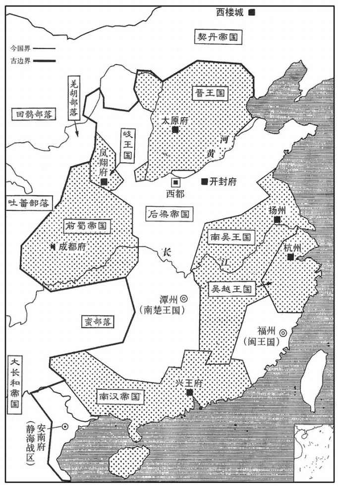
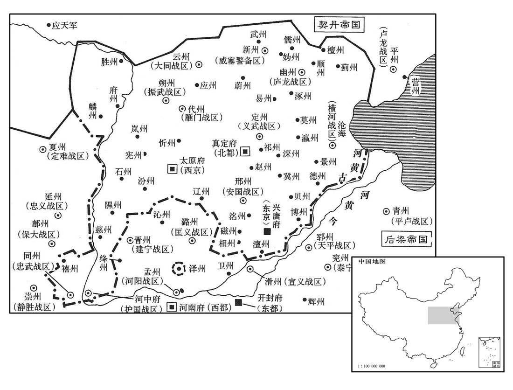
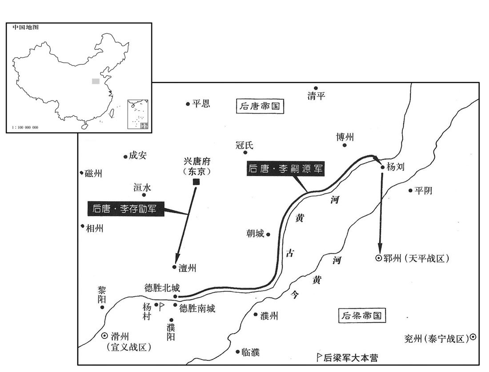
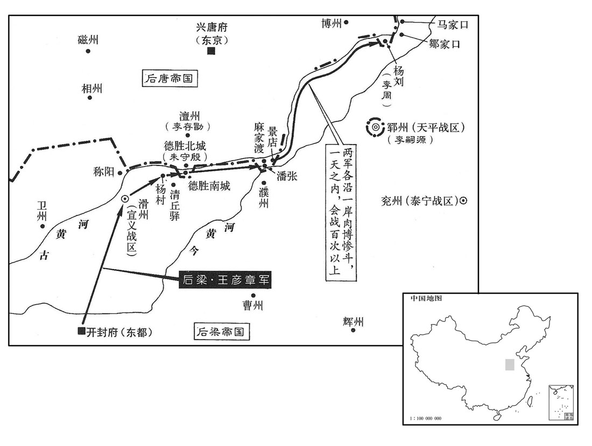
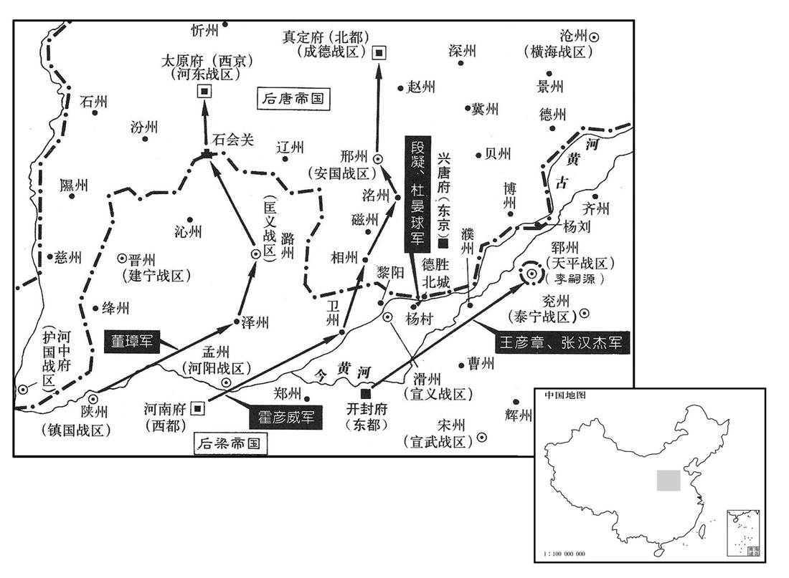
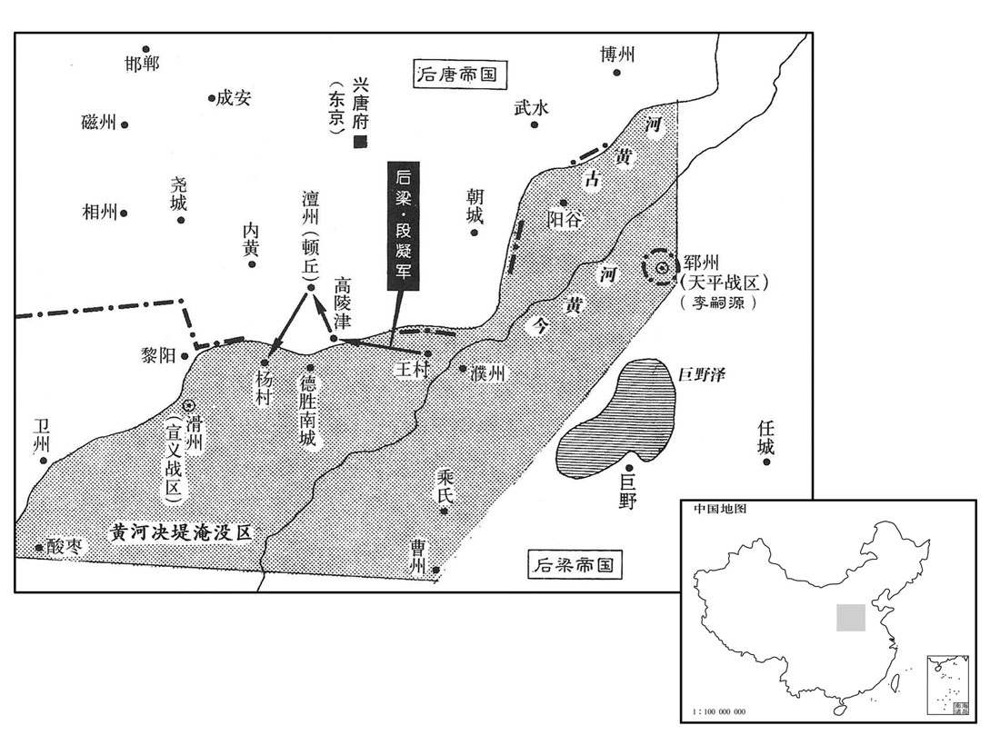
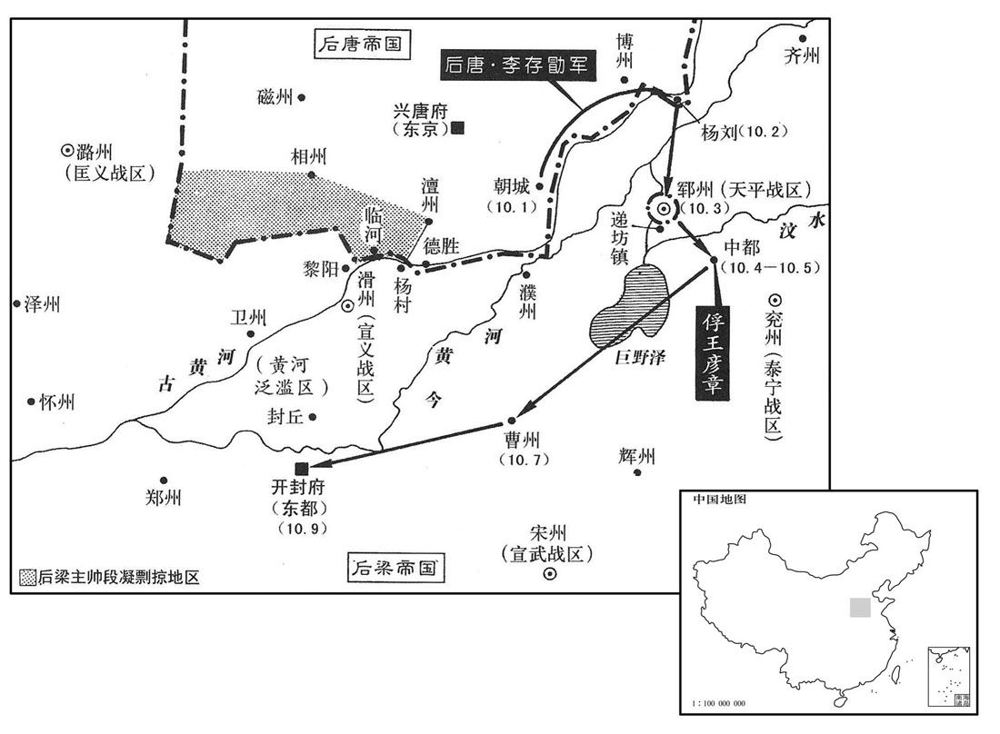
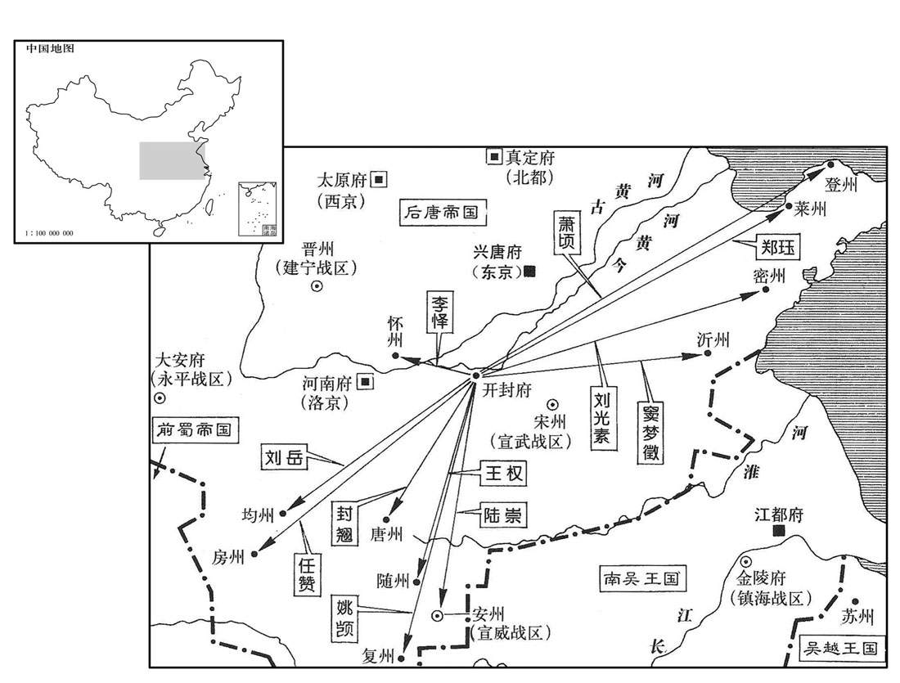
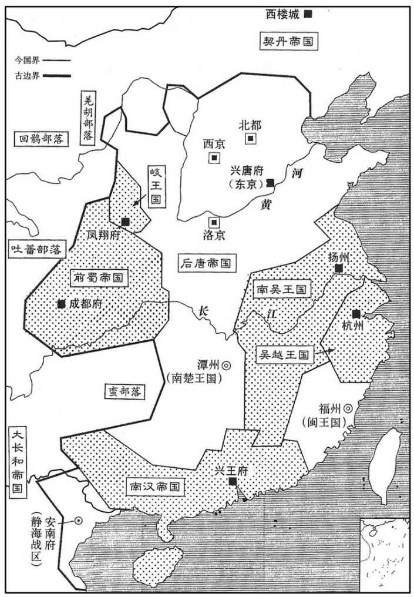

卷次与人物目录 / 卷272
资治通鉴 · 卷第二百七十二【后唐纪一】
公元923年至公元923年 · 原文、白话与胡三省注
本页按胡注本编排保存全卷内容。白话采用本站所据译本，未可靠对应的内容另列说明；事件标题用于定位，并非原书文字。
本卷共103段原文，102段有译文对应，1段缺译或待核对。
卷第二百七十二【后唐纪一】昭阳协洽（癸未），一年。
卷首原文与注释
庄宗光圣神闵孝皇帝上〔讳孝勖，晋王克用长子也。其先本号朱邪，出于西突厥处月别部，居沙陀碛，自号沙陀而以朱邪为姓。至执宜归唐。执宜子赤心有功于唐，赐姓名李国昌，编于属籍。克用，赤心之子也。五代会要曰：日执宜，沙陀府都督拔野古之六代孙。邵阳史曰：拔野古，朱邪同时人，非其鈶祖。〕
公元923年 · 后唐庄宗光圣神闵孝皇帝同光元年
同光元年〔（癸未、九二三）是年四月始即位改元。〕
上传原文的注释括号有异常，字符原样保留；无法可靠划分的段落默认全文显示。
本年事件索引（现代整理）
- 晋王设置百官
- 吴越王镠受册建国
- 李继韬投梁请为梁臣
- 裴约据泽州拒降
- 郭威应募入军
- 晋王任李存审为卢龙节度使
- 李嗣源即帝位建立后唐
- 卢程赴晋阳册立太后太妃
- 豆卢革卢程才疏任相
- 郭崇韬荐张居翰掌枢密
- 后唐设置三京府
- 后唐追尊祖先建宗庙
- 契丹进犯幽州至易定退兵
- 李嗣源夜袭郓州取胜
- 梁主惩处郓州失守将领
- 后唐帝屯澶州防王彦章
- 后唐邀吴共同攻梁
- 王彦章三日破德胜南城
- 梁军攻杨刘不克
- 后唐筑新城救援郓州
- 李嗣源请治朱守殷败军罪
- 后唐军南进梁军退守杨刘
- 蜀侍中王宗侃卒
- 李绍荣擒梁军斥候
- 王彦章遭赵岩张汉杰陷害
- 后唐帝慰劳守杨刘的李周
- 卢程鞭打兴唐府吏获罪
- 裴约告急后唐帝未及救援
- 后唐帝自杨刘还兴唐
- 梁主决河阻断唐军
- 段凝受贿任梁军北面招讨使
- 段凝率梁军五万渡河劫掠
- 梁主命王彦章屯兵谋取郓州
- 后唐帝驻军朝城
- 康延孝率骑兵投奔后唐
- 蜀主宠信韩昭等纵情游宴
- 宋光嗣等专断蜀国政事
- 蜀主重阳宴近臣听嘉王进谏
- 后唐与梁军相持于临河
- 王彦章进攻郓州前锋败退
- 日食
- 后唐帝遣刘氏李继岌回兴唐诀别
- 后唐大军渡河击败梁军围中都
- 王彦章拒绝归唐并赴死
- 后唐诸将议取大梁
- 李嗣源率前军急趋大梁
- 后唐军至曹州梁将投降
- 梁军败报王彦章被擒
- 梁主遣张汉伦追段凝军
- 朱珪请率控鹤军出战未准
- 梁主诛杀宗室兄弟
- 梁主登建国楼选亲信求援
- 唐军逼近赵岩逃奔许州
- 梁主命皇甫麟杀己后自杀
- 李嗣源攻入大梁梁主首级献上
- 李振入朝敬翔自缢
- 后唐赦免梁百官
- 赵岩逃至许州被温昭图斩首
- 王瓒收朱友贞尸殡佛寺
- 段凝率军投降后唐
- 后唐贬谪后梁朝臣
- 段凝杜晏球请诛梁朝权臣
- 陆思铎降唐获释
- 郭崇韬代豆卢革掌中书
- 梁藩镇入朝获赦
- 豆卢革自魏州入朝
- 段凝杜晏球赐李氏姓名
- 张宗奭入朝劝止发掘梁太祖墓
- 李嗣源兼任中书令
- 后唐遣使宣谕诸道
- 楚王马殷遣马希范入朝
- 高季兴改名季兴拒绝入朝
- 后唐灭梁告知吴蜀
- 吴国查处钟泰章侵占官马
- 蜀国彗星示灾张云进谏
- 郭崇韬奏请整顿官员称谓
- 后唐帝宠信伶人敬新磨谏猎
- 伶人专权欺凌士大夫
- 朱友谦入朝受后唐宴赐
- 张全义请后唐迁都洛阳
- 朱友谦赐名李继麟
- 康延孝赐名李绍琛任郑州防御使
- 后唐撤销北都复称成德军
- 温韬入朝赐名李绍冲复还镇
- 袁象先赐名李绍安
- 后唐裁减冗官
- 梁均王闻杨刘陷落暂停南郊祭祀
- 后唐改汴州为宣武军
- 后唐诏文武官先赴洛阳
- 后唐任赵光胤韦说为宰相
- 赵光逢闭门拒谈中书政事
- 孔谦排挤张宪改任东京副留守
- 张全义高季兴受任宰相并议伐吴蜀
- 后唐改大安府为西京京兆府
- 后唐帝离开大梁前往洛阳
- 吴越王任杜建徽为左丞相
- 后唐以汴州宫苑为行宫
- 后唐调整各地藩镇军号
- 御史台请恢复唐朝律令格式
- 李继韬受诛并连坐李继远
- 李继远杀李继俦后自刭
- 吴王遣卢苹出使后唐
- 郭崇韬劝后唐释放高季兴
春，二月，晋王下教置百官，于四镇判官中选前朝士，欲以为相。〔四镇，河东、魏博、易定、镇冀。朝，直遥翻。相，息高翻；下同。〕河东节度判官卢质为之首，质固辞，〔卢质慢骂晋王诸弟，又能辞相位于惟新之朝，是必有见也。〕请以义武节度判官豆卢革、河东观察判官卢程为之；王即召革、程拜行台左、右丞相，〔考异曰：薛史唐纪作「卢澄」。今从实录、庄宗列传。〕以质为礼部尚书。
春季，二月晋王下令设置百官，在河东、魏博、易定、镇冀四镇判官中选拔前朝的士族，想任命为宰相。河东节度判官卢质名列榜首，卢质坚决辞让，请求让义武节度判官豆卢革、河东观察判官卢程来充任。于是晋王马上召见豆卢革和卢程，并拜他们为行台左右承相，任命卢质为礼部尚书。
梁主遣兵部侍郎崔协等册命吴越王镠为吴越国王。丁卯，镠始建国，仪卫名称多如天子之制，〔称，尺证翻。〕谓所居曰宫殿，府署曰朝廷，教令下统内曰敕，将吏皆称臣，〔将，即亮翻。〕惟不改元，表疏称吴越国而不言军。〔以建国，不肯复称镇海、镇东军节度。〕以清海节度使兼侍中传瓘为镇海、镇东留后，总军府事。置百官，有丞相、侍郎、郎中、员外郎、客省等使。〔使，疏吏翻。考异曰：十国纪年：「镠功臣、诸子领节制，皆置而后请命。居室服御，穷极侈靡，末年荒恣尤甚。钱氏据两浙逾八十年，夕厚贡献，内事奢僭，地狭民众，赋敛苛暴，鸡鱼卵菜，纤悉收取。斗升之逋，罪至鞭背。每笞一人，则诸案使各持其簿列于庭，先唱一簿，以所负多少为数；笞已，次吏复唱而笞之，尽诸簿乃止，少者犹笞数十，多者至五百余，讫于国除，人苦其政。」吴越备史称：镠节俭，衣衾用紬布，常膳惟襷漆器，寝帐坏，恭穆夫人欲易以青缯，镠不许。尝岁除，夜会子孙鼓琴，未数曲，止之，曰：『闻者以我为长夜之饮，』遂罢。」钱易家话称：「镠公宴不贰羹胾，衣必三濣然后易。」刘恕以为钱元瓘子信撰吴越备史、备史遗事、忠懿王勋业志、戊申英政录，弘倧子易撰家话，俶子惟演撰钱氏庆系图谱、家王故事、秦国王贡奉录，故吴越五王行事失实尤多，虚美隐恶，甚于他国。按钱镠起于贫贱，知民疾苦，必不至穷极侈靡，其奢汰暴敛之事盖其孙所为也。今从家话。〕
后梁国主派遣兵部侍郎崔协等，任命吴越王钱为吴越国王。丁卯（二十二日）钱开始建国，仪仗与卫士的名称都和天子的制度一样，把居住的地方叫做宫殿，府署叫做朝廷，命令下达到所管辖范围内曰制敕，将吏都称臣下，只是没有改年号，上表疏时称为吴赵国，而不再称某军节度，任命清海节度使兼侍中钱传为镇海、镇东留后，总管军府事务。设置百官，有丞相、侍郎、郎中、员外部、客省等使。

李继韬虽受晋王命为安义留后，〔事见上卷上年。〕级不自安，幕僚魏琢、牙将申蒙复从而间之〔复，扶又翻。闻，古苋翻。〕曰：「晋朝无人，〔朝，直遥翻。〕终为梁所并耳。」会晋王置百官，三月，召监军张居翰、〔张居翰，唐昭宗时为范阳监军，天复中大诛宦者，节度使刘仁恭匿居翰于大安山之北溪以免。其后梁兵攻仁恭，遣居翰从晋王攻梁潞州以牵其兵，晋遂取潞州，因以居翰为昭义监军。〕节度判官任圜赴魏州，〔任，音壬。〕琢、蒙复说继韬曰：〔说，式芮翻。〕「王急召二人，情可知矣。」继韬弟继远亦劝继韬自托于梁，继韬乃使继远诣大梁，请以泽潞为梁臣。梁主大喜，更命安义军曰匡义，〔更，工衡翻。〕以继韬以二子为质。〔质，音致。〕
李继韬虽然接受晋王的命令为安义留后，但始终心里不安，他的幕僚魏琢、牙将申蒙又从中挑拨说：“晋国没有继承的人，最终是会被梁国所吞并的。”这时正好晋王在等置百官，三月，晋王让监军张居翰、节度判官任圜赶赴魏州，魏琢、申蒙又劝李继韬说：“晋王着急地召见这两个人，其情可知啊！”李继韬的弟弟李继远也劝李继韬要依靠后梁。李继韬派李继远到大梁，请求把泽州，潞州归属后梁而成为后梁的臣属。后梁主很高兴，下令把安义军改为匡义，任命李继韬为匡义节度使、同平章事。李继韬把他的两个儿子作为人质。
安义旧将裴约戍泽州，泣谕其众曰：「余事故使踰二纪，故使，谓继韬父嗣昭也。十二年为一纪。使，疏吏翻。〕见其分财享士，志灭仇雠。不幸捐馆，〔死谓之捐馆，言弃捐馆舍而逝也。〕柩犹未葬，而郎君遽背君亲，〔弃君事雠，不惟背君，亦背亲之教命。背，薄妹翻。〕吾宁死不能从也！」遂据州自守。梁主以其骁将董璋为泽州刺史，将兵攻之。
两版字句有差异，建议核对原文。
安义军的旧将领裴约戍守在泽州，边哭边对部下说：“我侍奉原来的节度使李嗣昭二十多年，亲眼看见他财物分给士卒共亭，他立志消灭仇敌。但不幸去世，灵柩还没有安葬，他的儿子就背判父亲和其他亲人，我宁死也不能服从。”于是他占据泽州坚守。后梁主任命勇将董璋为泽州刺史，并让他率兵攻打裴约。
继散财募士，尧山人郭威往应募。威使气杀人，系狱，继韬惜其才勇而逸之。〔郭威事始此。欧史云：威尝游于市，市有屠者，以勇服其市人。威醉呼屠者使进几割肉。割不如法，威叱之，屠者披其腹示之曰：「尔勇者，能杀我乎﹖」威即前取刀刺杀之，一市皆惊，而威自如。为吏所执，继韬纵使亡去。〕
李继韬分散财物来招募士卒，尧山人郭威前往应募。郭威因一气之下而杀死了市人，被捆起来送往监狱，李继韬珍惜郭威的才能和勇气，把他放了。
契丹寇幽州，晋王问帅于郭崇韬，〔帅，所类翻。〕崇荐横海节度使李存审。时存审卧病，己卯，徙存审为卢龙节度使，舆疾赴镇。以蕃汉马步副总管李嗣领横海节度使。〔李嗣源时从晋王总兵，使领横海节。〕
契丹侵略幽州，晋王问郭崇韬谁可以率兵作战，郭崇韬推荐横海节度使李存审。李存审这时正卧床生病，已卯（初五），调李存审为卢龙节度使，用车子拉着他带病的身体前往。并任命蕃汉马步副总管李嗣源为横海节度使。
晋王筑坛于魏州牙城之南，夏，四月，己巳，升坛，祭告上帝，遂即皇帝位，〕曰遂者，先有即位之心，而今遂其事。〕国号大唐，大赦，改元。〔因唐国号，改天佑年号为同光。〕尊母晋国太夫曹氏为皇太后，嫡母秦国夫刘氏为皇太妃。〕君子以是知帝之不终。〕以豆卢革为门下侍郎，卢程为中书侍郎，并同平章事；郭崇韬、张居翰为枢宁使，〔徐无党曰：枢密使，唐故事宦者为之，其职甚微，至此始参军士人，而与宰相权任钧矣。余按唐末两枢密与两神策中尉，号为四贵，其职非甚微也，特专用宦者为之耳。项安世曰：唐于政事堂后列五房，有枢密房以主曹务，则枢密之要，宰相主之，未始他府；其后宠任宦人，始以枢密归之内侍。〕卢质、冯道为翰林学士，张宪为工部侍郎、租庸使，〔宋白曰：租庸使自天宝三年韦坚始。〕又以义武掌书记李德林为御史中丞。德休，绛之孙也。〔李绛相唐宪宗，有直声。〕
两版字句有差异，建议核对原文。
晋王在魏州牙城的南面修筑祭祀用的坛宇，夏季，四月，己巳（二十五日），晋王登上祭坛，祭告上帝，随即登皇帝宝位，国号为大唐，实行大赦，改年号。尊其母晋国太夫人曹氏为皇太后，尊其父的正妻秦国夫人刘氏为皇太妃。任命豆卢革为门下侍郎，卢程为中书侍郎，两人都为同平章事，任命郭崇韬、张居翰为枢密使，卢质、冯道为翰林学士，张宪为工部侍郎、租庸使，又任命义武节度掌书记李德休为御史中丞。李德休是李绛的孙子。
诏卢程诣晋阳册太后、太后。初，太纪无子，性贤，不勡忌；太后为武皇侍姬，太妃常劝武皇善待之，〔晋王克用谥武皇帝。〕太后亦自谦退，由是相得甚欢。及受册，太妃诣太后宫贺，有善色，太后忸怩不自安。〔忸，女六翻。怩，女夷翻。〕太妃曰：「愿吾儿享国久长，吾辈获没于地，园陵有主，余何足言！」因相向歔欷。〔歔，音虚。欷，音希，又许既翻。〕
后唐帝下诏命令卢程到晋阳册封太后、太妃。当初，太妃没有儿子，性格贤惠，从不嫉妒。太后做武皇帝侍姬时，太妃经常劝说武皇帝要很好地对待她，太后也很谦让，因此两个人相处得很欢洽。到了受命册封时，太妃到太后的宫里祝贺，脸上显得很高兴，太后反而显出羞愧的样子，感到不安。太妃说：“希望我们的儿子能够长久地做皇帝，我们死后埋在地下，园陵有主，还有什么说的。”两个人因此又面对着面哭了一会儿。
豆卢革、卢程皆轻浅无他能，上以其衣冠之绪，霸府元僚，故用之。〔按欧史，豆卢为世名族，革父瓒为唐舒州刺史、唐末之乱，革避地中山，为王处直判官。卢程不知其家世何人，唐昭宗时举进士，为铁出使巡官，唐末避乱，变服为道士，游燕、赵间。豆卢革为义武节度判官，卢汝弼为河东节度副使，二人皆故唐名族，与程门地相等，因共荐为河东节度推官。帝议择相，而唐公卿故家遭乱丧亡且尽，卢汝弼、苏循已死，卢质又辞，故用革、程。兴王之君，命相如此，天下事可知矣。〕
豆卢革、卢程两人都很浅薄，没有其他才能，后唐帝认为他们是仕宦世家，过去霸府的僚属，所以就起用了他们。
初，李绍宏为中门使，郭崇韬副之。至是，自幽州召还，〔梁贞明五年，李绍宏出幽州事见上卷。〕崇韬恶其旧人位在己上，〔恶，乌路翻。〕乃荐张居翰为枢密使，以绍宏为宣徽使，绍宏由是恨之。〔唐制，宣徽使在枢密使之下，且权任不及远甚。〕居翰和谨畏事，军国机政皆崇韬掌之。支度务使孔谦自谓才能勤效，应为租庸使；众议以谦以微地寒，不当遽总重任，〔孔谦，魏州孔目吏也，晋王得魏州，以为支度务使。〕故崇韬荐张宪，以谦副之，谦亦不悦。
当初，李绍宏为中门使，郭崇韬为中门副使。这时，李绍宏又从幽州召回，郭崇韬很忌恨原来和他在一起的人职位比自己高，就推荐张居翰为枢密使，李绍宏为宣徽使，李绍宏因此而怀恨郭崇韬。张居翰和顺谨慎，怕惹事，军政大权都由郭崇韬掌握。支度务使孔谦自称有才能，而且勤劳效力，应当担任租庸使。大家认为孔谦地位低微，出身贫寒，不应当很快地提拔他担当重任，所以郭崇韬推荐张宪担任租庸使，孔谦为副使。孔谦心中也不高兴。
以魏州为兴唐府，建东京；〔薛居正五代史：升魏州为东京兴唐府，改元城为兴唐县，贵乡为广晋县。〕又于太原府建西京，又以镇州为真定府，建北都。以魏博节度判官王正言为礼部尚书，行兴唐尹；太原马步都虞候孟知祥为太原尹，充西京副留守；潞州观察弮官任圜为工部尚书，兼真定尹，充京副留守；〔「京」，当作「都」。〕皇子继岌为北都留守、兴圣宫使，判六军诸卫事。〔按后唐洛阳大西宫兴圣宫。此时未得洛阳，当以魏州府舍为兴圣宫。宋白曰：唐庄宗即位于魏州，宰相豆卢革因进拟为兴圣宫，以皇子继岌为兴圣宫使。〕时唐国所有凡十三节度、五十州。〔十二节度，天雄、成德、义武、横海、卢龙、大同、振武、鴈门、河东、护国、晋绛、安国、昭义。五十州，魏、博、贝、澶、相、郓、洺、磁、镇、冀、深、赵、易、祁、定、沧、景、德、瀛、莫、幽、涿、檀、蓟、顺、营、平、蔚、朔、云、应、新、妫、儒、武、忻、代、岚、石、宪、麟、府、并、汾、慈、隰、泽、潞、沁、辽，凡五十州。而昭义领泽、潞二州，己附于梁，止有十二节度、四十八州耳。〕
后唐把魏州升为兴唐府，在这里建东京，又在太原府建西京，同时把镇州升为真定府，建北都。任命魏博节度判官王正言为礼部尚书，兼任兴唐尹。任命太原马步都虞候孟知祥为太原尹，充西京副留守。任命潞州观察判官任圜为工部尚书，兼真定尹，充北京副留守。任命皇子李继岌为北都留守、兴圣宫使，判六军诸卫事。当时的唐国共有十三个节度、五十个州。

闰月，追尊皇曾祖执宜曰懿祖昭烈皇帝，祖国昌日献祖文皇帝，考晋王曰太祖武皇帝。立宗庙于晋阳，以高祖、太宗、懿宗、昭宗洎懿祖以下为七室。〔唐庙四，亲庙三。〕
闰四月，后唐帝追尊曾祖父李执宜为懿祖昭烈皇帝，追尊祖父李国昌为献祖文皇帝，追尊父亲晋王李克用为太祖武皇帝。在晋阳建立宗庙，从高祖、太宗、懿宗、昭宗至懿祖以下，共七个庙宇。
甲午，契丹寇幽州，至易定而还。〔还，从宣翻，又如字。〕
甲午（二十日），契丹人侵略幽州，行至易定又退回。
时契丹屡入寇，钞掠馈运，〔钞，楚交翻。〕幽州食不支半年，卫州为梁所取，潞州内反，人情岌岌，以为梁未可取，帝患之。会郓州将卢顺密来奔，先是梁天平节度使戴思远屯杨村，〔戴思远屯杨村事始上卷梁贞明五年。先，悉荐翻。〕留顺密与巡检使刘遂严、都指挥使燕颙守郓州，〔燕，音烟，姓也。颙，鱼容翻。〕顺密言于帝曰：「郓州守兵不满千人，遂严、颙皆失众心，可袭取也。」〔郭崇韬等皆以为「悬军远袭，万一不利，虚弃数千人，顺密不可从。」帝密召李嗣源于帐中谋之曰：「梁人志在吞泽潞，不备东方，若得东平，则溃其心腹。东平果可取乎﹖」〔郓州本东平郡。〕嗣源自胡柳有渡河之惭，〔事见二百七十卷梁贞明四年。〕常欲立奇功以蚑过，对曰：「今用兵岁久，生民疲弊，苟非出奇取胜，大功何由可成！臣愿独当此役，必布以报。」帝悦。壬寅，遣嗣源将所部精兵五千自德胜趣郓州。比及杨刘，〔趣，七喻翻。比，必利翻。按九域志：郓州东阿县有杨刘镇，临河津。东阿东南至郓州六十里。以下文夜渡河观之，则李嗣源之兵自德胜北城而东，循河北岸而行至杨刘渡口。〕日已暮，阴雨道黑，将士怕不欲进，高行周曰：「此天赞我也，彼必无备。」夜，渡河至城下，郓人不知，〔此自杨刘取径道至郓州城下，不经东阿县治所。〕李从珂先登杀守卒，启关纳外兵，进攻牙城，城中大扰。癸卯旦，嗣源兵尽入，遂拔牙城，刘遂严、燕颙奔大梁。嗣源禁焚掠，抚吏民，执知州事节度副使崔筜、判官赵凤送兴唐。〔筜，都郎翻。唐于魏州置兴唐府。〕帝大喜曰：「总管真奇才，吾事集矣。」即以嗣源为天平节度使。
两版字句有差异，建议核对原文。
这时契丹人经常入侵后唐，强夺他们的粮食，幽州一年的粮食不够半年用。卫州被后梁夺取，潞州内部也发生叛乱，人们都感到很危险，认为不能消灭后梁，后唐帝也为此担忧。这时正好后梁郓州将领卢顺密来投奔。在此之前，后梁天平节度使戴思远驻扎在杨村，留下卢顺密和巡检使刘遂严、都指挥使燕驻守郓州。卢顺密告诉后唐帝说：“驻守郓州的士兵不足一千人，刘遂严和燕都失掉了民心，可以攻取郓州。”郭崇韬等都认为：“孤军远征，万一不利，白白丢掉数千人，卢顺密的话不可听从。”后唐帝秘密召见李嗣源，在帷帐中谋划说：“梁人的计划是吞并泽州、潞州，东边没有什么防备，如果能取得东平，就击败了他的心腹之地。东平可以夺取吗？”李嗣源自从在胡柳战役中因为没有跟从晋王，率兵北渡黄河，一直感到惭愧，经常打算建立奇功来弥补过去的过错。于是他回答后唐帝说：“现在打了一年多仗，百姓们很疲惫，如果不出奇制胜，怎能成就大的功业。我希望一个人挑起这次战役的重担，一定会有好消息报告皇帝。”后唐帝很高兴。壬寅（二十八日），派遣李嗣源率领他所属部队的五千精税士卒从德胜直取郓州。到达杨刘时，太阳已经落山，阴雨绵绵，道路漆黑，将士们都不想继续前进了。高行周说：“这是天助我也，他们一定毫无准备。”黑夜，渡过黄河到了城下，郓州人根本不知道，李从珂首先登上城门，杀死守城门的士卒，打开城门让队伍进去，接着进攻牙城，城中大乱。癸卯（二十九日）早晨，李嗣源的部队全部进入城内，攻取了牙城。刘遂严、燕逃奔到大梁。李嗣源禁止士卒在城内焚烧强掠，安抚百姓，只把知州事节度副使崔、判官赵凤押送到兴唐。后唐帝十分高兴地说：“总管你真是奇才，我们的事情成功了。”马上任命李嗣源为天平节度使。

梁主闻郓州失守，大惧，斩刘遂严、燕颙于帝，罢戴思远招讨使，降授宣化留后，〔欧史职方考，梁置宣化军于邓州。〕遣使诘让北面诸将段凝、王彦章等，趣令进战。〔诘，去吉翻。趣，读曰促。〕敬翔知梁室已危，以绳内靴中，入见梁主曰：〔见，贤遍翻。〕「先帝取天下，不以臣为不肖，所谋无不用。今敌势益强，而陛下遮忽臣言，臣身无用，不如死。」引绳将自经。梁主止之，问所欲言，翔曰：「事急矣，非用王彦章为大将，不可救也。」〔敬翔以王彦章一时健鬬而取之耳。观其用兵无远略，乌足以救梁之亡乎﹗〕梁主从之，以彦章代思远为北面招讨使，仍以段凝为副。
后梁主听说郓州失守，十分害怕，在大街上把刘遂严、燕斩了，罢免了戴思远的招讨使官职，降为宣化留后。梁主派遣使者去责问驻守在北面的段凝、王彦章等将领，让他们前进作战。敬翔知道后梁王室已经很危险了，于是把绳子装在靴子里进宫内求见后梁主，说：“先帝夺取天下的时候，不认为我敬翔没有才能，无论什么谋划都让我参与。现在敌人的势力更加强大，而陛下不听或忽视我的话，我已经没有什么用了，不如死去。”把绳子从靴子里取出来就要上吊自缢。后梁主赶快劝阻，并问他有什么话想说。敬翔说：“现在的事情十分紧急，不用王彦章为大将，不能挽救梁王室的危亡。”后梁主听从了他的建议，让王彦章代替戴思远为北面招讨使，仍然用段凝为副招讨使。

帝闻之，自将亲军屯澶州，命蕃汉马步都虞候朱守殷守德胖尸，戒之曰：王铁枪勇决，乘愤激之气，必来唐突，宜谨备之！」〔广韵，「唐突」作「蛯突」又作「荡突」，唐、荡义同也。史言晋王善于料王彦章，不善于用人守德胜。〕守殷，王幼时所役苍头也。〔欧史曰：朱守殷少事帝为奴，名曰会儿。帝读书，会儿常侍左右。〕
后唐帝听说这件事后，亲自率领亲军驻守在澶州，命令蕃汉马步都虞候朱守殷坚守德胜，并告诫他说：“王铁枪勇敢果断，他们乘士卒愤怒激动的气势，一定会突然到来，应当谨慎小心地防备他们。”朱守殷是后唐帝小时候所用的奴仆。
又遣使遗吴王书，〔遗，惟季翻。〕告以已克郓州，请同举兵击梁。五月，使者至吴，徐温欲持两端，将舟师循海而北，助其胜者。严可求曰：「若梁人邀我登陆为援，何以拒之﹖」温乃止。
后唐帝又派遣使者给吴王送去书信，告诉吴王说郓州已经被攻破，请他一起率兵攻打后梁。五月，使者到达吴国，徐温打算脚踩两只船，率领水上部队沿海向北而行，帮助取得胜利的一方。严可求说：“如果梁军请求我们登上陆地援助他们，用什么理由拒绝他们呢？”于是徐温才停止了行动。
梁主召问王彦章以破敌之期，彦章对曰：「三日。」左右皆失笑。〔自大梁出师拒晋，二日不能至河上，故笑其言。〕彦章出，两日，驰室滑州。〔九域志：大梁北至滑州二百一十里。〕辛酉，置酒大会，阴遣人具舟于杨村；夜命甲士六百，皆持巨斧，载冶者具疒炭，乘流而下。〔杨村顺流趣德胜，水程十八里耳。疒，蒲拜翻，韦囊也，鼓以吹火。〕会饮尚未散，彦章阳起更衣，引精兵数千循河南岸趋德胜。〔更，工衡翻。趋，七喻翻。〕天微雨，朱守殷不为备，舟中兵举锁烧断之，因以巨斧斩浮桥，而彦章引兵急击南城。浮桥断，南城遂破，〔【章：十二行本「破」下有「斩首数千级」五字；乙十一行本同；孔本同；张校同。】〕时受命适三日矣。守殷以小舟载甲士济河救之，不及。彦章进攻潘张、麻家口、景店诸寨，皆拔之，〔潘、张二姓同居一村，因以为名。店，都念翻。崔古豹古注曰：店，所以置货鬻物也。有姓景者先尝设店于其地，因以为名。凡此皆河津之要，晋人立寨守之。〕声势大振。
后梁主召见王彦章，问他多长时间可以击败敌人，王彦章回答说：“三天。”左右大臣都哑然失笑。王彦章率兵出发，用了两天时间，飞速到达滑州。辛酉（十八日），王彦章大办宴会，并秘密派人在杨村准备舟船。晚上，命令六百名士卒都拿着大斧，船上载着冶炼的工匠，准备了吹火用的皮囊和炭，顺流而下。这时宴会还没有结束，王彦章表面上是出去换衣服，实际上他率领数千精兵沿着黄河南岸直奔德用。这时天下着小雨，朱守殷没有一点防备，王彦章船上的士兵将城门的锁用火烧断，用大斧把浮桥砍断。王彦章率兵迅速向南城发起进攻。浮桥被砍断，南城就被攻破，此时正好是接受命令以后的第三天。朱守殷用小船载着士卒渡过黄河来援救，但已来不及了。王彦章又向潘张、麻家口、景店诸寨发起进攻，都攻了下来。王彦章的声势大振。
帝遣宦者焦彦宾急趣杨刘，〔趣，七喻翻。〕与镇使李周固守，命守殷弃德胜北城，撤屋为桒，〔桒，音伐。大曰桒，小曰桴。〕载兵械浮河东下，助杨刘守备，徙其屯屯粮薪炭于澶州，所耗失殆半。王彦章亦撤南城屋材浮河而下，各行一岸，每遇湾曲，辄于中流交鬬，飞矢雨集，或全舟覆没，一日百战，互有胜负。比及杨刘，〔比，必寐翻。〕殆亡士卒之半。〔此谓自德胜浮河东下之士卒也。〕己巳，王彦章、段凝以十万之众攻杨刘，百首俱进，昼夜不息，连巨舰九艘，横亘河津以绝援兵。〔舰，户黯翻搜，苏遭翻。〕城垂陷者数四，赖李周悉力拒之，与士卒同甘苦，彦章不能克，退屯城南，为连营以守之。
后唐帝派遣宦官焦彦宾迅速赶到杨刘，与杨刘镇使李周在那里坚守。命令朱守殷放弃德胜北城，把房屋拆掉做成木筏，载着士兵和武器从黄河上向东漂下，帮助杨刘坚守，把德胜的粮草薪炭运往澶州，损失了将近一半。王彦章也把德胜南城的房屋拆掉，做成木筏，顺着黄河漂下去。王彦章和朱守殷各走一岸，每遇上黄河弯曲的地方，就在河中间战斗，射出的箭像雨一般密集，有时整船覆没，一日交战百余次，两军互有胜负。到达杨刘时，朱守殷的士卒有一半伤亡。己巳（二十六日），王彦章、段凝率领十万大军向杨刘发起进攻，四面八方一起推进，昼夜不停。把九艘大船连在一起，横放在黄河的渡口上，来阻挡朱守殷的援兵。杨刘城几次都差一点被攻陷，全靠李周与士卒同甘共苦，全力抵御，王彦章才没攻下，于是率兵退到城南驻扎，把营寨连起来坚守。
杨刘告急于帝，请日行百里以赴之；〔帝在澶州，距杨刘几二百里。〕帝引兵救之，曰：「李周在内，何忧！」日行六十里，不废畋猎，六月，乙亥，至杨刘。梁兵堑垒重复，严不可入，〔重，直龙翻。〕帝患之，问计于郭崇韬，对曰：「今彦章据守津要，意谓可以坐取东平；苟大军不南，则东平不守矣。臣请筑垒于博州东岸以固河津，既得以应接东平，又可以分贼兵势。但虑彦章诇知，〔诇，古永翻，又翾正翻。〕径来薄我，不城不能就。愿陛下募敢死之士，日令挑战以缀之，〔令，力经翻。挑，徒了翻。〕苟彦章旬日不东，则城成矣。」时李嗣源守郓州，河北声问不通，人心渐离，不保朝夕。会梁右先锋指挥使康延孝密请降于嗣源，延孝者，太原胡人，〔欧史曰，康延孝代北人，为太原军卒，有罪，亡命奔梁。〕有罪，亡奔梁，时隶段凝麾下。嗣源遣押牙临漳范延光送延孝蜡书诣帝，延光因言于帝曰：「杨刘控扼已固，梁人必不能取，请筑垒马家口以通郓州之路。」帝从之，遣崇韬将万人夜发，倍道趣博州，至马家口渡河，筑城昼夜不息。〔马家口，所谓博州东岸也。郭崇韬自杨刘夜发，倍道而行，恐梁人知之故也。〕帝在杨刘，与梁人昼夜苦战。崇韬筑新城凡六日，王彦章闻之，将兵数万人驰至，戊子，急攻新城，连巨舰十余艘于中流以绝援路。时板筑仅毕，城犹卑下，沙土疏恶，未有楼橹及守备；崇韬慰劳士卒，以身先之，〔先，悉荐翻。〕四面拒战，遣间使告急于帝。帝自杨刘引大军救之，陈于新城西岸，城中望之增气，大呼叱梁军，梁人断绁敛舰；帝舣舟将渡，〔间，古苋翻。使，疏吏翻。陈，读曰阵。呼，火故翻。断，丁管翻。绁，息列翻，索也。舣，鱼倚翻，亦作「檥」。汉书音义：整舟向岸曰檥。〕彦章解围，退保邹家口。〔麻家口、马家口、皆沿河津渡之口，亦因其土人所居之姓以为地名。〕郓州奏报始通。
杨刘方面向后唐帝告急，请求皇帝日行百里赶快到达杨刘。后唐帝率兵前往援救，说：“有李周在那里，有什么忧虑的。”于是日行六十里，在路上还照常打猎。六月，乙亥（初二），到达杨刘。后梁军修筑了重重营垒，防守十分严密，很难深入，后唐帝十分担忧，就问郭崇韬怎么办好，郭崇韬回答说：“现在王彦章据守着重要的渡口，他的意思是想坐取东平。如果大军不向南开进，那么东平就难以坚守。我请求在博州东岸修筑营垒，巩固黄河渡口，既可以接应东平，又可以分散敌人的兵力。只要忧虑王彦章侦察到我们的情况，直接逼近我们，到那时我们的城还修不好。希望陛下召募敢死的士卒，每天让他们挑动敌人出动来牵制他们，如果王彦章十几天不向东去，城垒就可以修好。”这时李嗣源在郓州坚守，黄河以北的消息一点也不通，人心离散，朝不保夕。正好后梁军右先锋指挥使康延孝秘密请求投降李嗣源，康延孝是太原地区的胡人，因为有罪，逃奔到后梁，当时属于段凝的部下。李嗣原派押牙临漳人范延光把康延孝请求投降的信用蜡封好送到后唐皇帝那里，范延光因此对后唐帝说：“杨刘把守很坚固，梁军一定攻不下来，请在马家口修筑城堡，打通通往郓州的道路。”后唐帝听从了他的意见，派郭崇韬率领万人连夜出发，兼程进奔博州，到马家口渡过黄河，昼夜不停地在那里修筑城堡。后唐帝则在杨刘，与后梁军昼夜苦战。郭崇韬修筑新城共用了六天时间，王彦章听到此事，便率领数万大军直奔新城，戊子（十五日），对新城发起紧急攻击，把十余艘战船连起来放到河的中间，断绝郭崇韬的援兵。当时马家口城垒的板墙刚刚修好，但城墙很低小，修墙用的沙土质量也不好，还没有修建望台和守备设施。郭崇韬慰劳士卒，以身率先，四面抗战，同时也派出密使向后唐帝告急。后唐帝从杨刘率领大军前来援救，在新城西岸摆开阵势，城里的士卒望见援兵来到，斗志倍增，大声斥骂后梁军，后梁军砍断了连接战船的绳子收回了战船。后唐帝的船刚要渡河，王彦章撤除了包围，退到邹家口坚守。郓州向后唐帝奏报的道路才打通。
李嗣源密表请正朱守殷覆军之罪；帝不从。〔帝不诛朱守殷，以成绛霄殿之祸。〕
李嗣源秘密上表请求治朱守殷覆军之罪，后唐帝没有接受。
秋，七月，丁未，帝引兵循河而南，彦章等弃邹家口，复趋杨刘。甲寅，游弈将李绍兴败梁游兵于清丘驿南。〔败，补迈翻。春秋：晋、宋、曹、卫同盟于清丘。杜预注曰：清丘，今在濮阳县东南。此因古地名以名驿也。〔段凝以为唐兵已自上流渡，惊骇失色，面数彦章，尤其深入。〔段，凝闻清丘驿之败，以为唐兵已自上流渡河逼汴，而彦章等方与唐相持于下流，责其深入郓州之境，无救于梁之危也。史言段凝内有所持而陵主帅。数，所具翻。〕
两版字句有差异，建议核对原文。
秋季，七月，丁未（初五），后唐帝率领军队沿着黄河向南开进，王彦章等放弃了邹家口，又开赴杨刘。甲寅（十二日），游弈将李绍兴在清丘驿的南面击败了后梁军的流动部队。段凝以为后唐兵已从上游渡过了黄河，惊惧失色，当面指责王彦章不应当深入郓州之境。
乙卯，蜀侍中魏王宗侃卒。
乙卯（十三日），前蜀侍中魏王王宗侃去世。
戊午，帝遣骑将李绍荣直抵梁营，擒其斥候，梁人益恐，又以火桒焚其连舰。〔连舰，即列于河流以断援兵者。〕王彦章等闻帝引兵已至邹家口，己未，解杨刘围，走保杨村；唐兵追击之，复屯德胜。梁兵前后急攻诸城，士卒遭矢石、溺水、暍死者且万人，〔暍于歇翻，伤暑而死也。〕委弃资粮、铠仗、锅幕，动以千计。〔锅，未禾翻，釜也。王彦章掩晋人之不备，取胜于一时，持久则败矣。使梁能终用之，亦未必成功。〕杨刘比至围解，〔比，必利翻。〕城中无食已三日矣。
戊午（十六日），后唐帝派骑将李绍荣直抵后梁营，抓获后梁军的哨兵，后梁军更加恐惧，李绍荣又用火点着木筏焚烧了后梁军连在一起的战船。王彦章等听说后唐帝率兵已经到达邹家口，己未（十七日），撤去了杨刘的包围，逃到杨村去坚守。后唐军追击后梁军，驻扎在德胜。后梁军先后紧急攻打后唐的几座城。士卒们遭受到箭石的射击，河水淹死、中暑而死的将近一万人，丢弃的物资、粮食、铠甲、武器、军锅、幕帐等，常常以千计。等到杨刘解除包围时，城中已经三天没有粮食吃了。
王彦章疾赵、张乱政，及为招讨使，谓所亲曰；「待我成功还，〔还，从，宣翻，又如字。〕当尽诛奸臣以谢天下！」赵、张闻之，私相谓曰：「我辈宁死于沙陀，不可为彦章所杀。」相与协力倾之。段凝素疾彦章之能而谄附赵、张，在军中与彦章动相违戾，百方沮桡之，〔沮，在吕翻。桡，奴教翻。〕惟恐其有功，潜伺彦章过失以闻于梁主。每捷奏至，赵、张悉归功于凝，由是彦章功竟无成。及归杨村，梁主信谗，犹恐彦章旦夕成功难制，征还大梁。〔考异曰：欧阳史云：「末帝罢彦章，以段凝为招讨使。彦章驰至京师入见，以笏画地，自陈胜败之迹。岩等讽有司劾彦章不恭，勒还第。」今从实录。〕使将兵会菙璋攻泽州。
王彦章很憎恨赵岩、张汉杰干扰国政，他当了招讨使后，对其亲信说：“等我成功返回，将杀掉全部奸臣，以此来答谢天下百姓。”赵岩、张汉杰听到这些话，私下议论说：“我们宁愿被沙陀族杀死，也不能被王彦章所杀。”相互协力合作，准备搞倒王彦章。段凝平素就很嫉妒王彦章的才能，因而献媚依附赵、张，在军中动不动就和王彦章作对，千万百计地败坏损伤王彦章的声誉，惟恐他建立战功，经常偷偷地监视王彦章的过失，报告梁主。每次送来捷报，赵、张都把功劳说成是段凝的，因此王彦章竟没有建立功业。他回到杨村后，后梁主相信了谗言，又怕王彦章一旦取得成功难以控制，于是把他调回大梁，让他率兵和董璋一起攻打泽州。
甲子，帝至杨刘劳李周曰：「微卿善守，吾事败矣。」〔劳，力到翻。〕
甲子（二十二日），后唐帝到杨刘去慰劳李周说：“要不是你善于防守，我的事业早失败了。”
中书侍郎、同平章事卢程以私事千兴唐府，府吏不能应，鞭吏背；光禄卿兼兴唐少尹任团，圜之弟，帝之从姊伲也，〔从，才用翻。〕诣程诉之。程骂曰：「公何等虫豸，欲倚妇力邪！」〔豸，驰尔翻。尔雅曰：有足曰虫，无足曰豸。〕团诉帝。帝怒曰：「朕误相此痴物，〔相，息亮翻。〕乃敢辱吾九卿！」欲赐自尽；卢质力救之，乃贬右无子。
中书侍郎、同平章事卢程因私事求于兴唐府，兴唐府的官吏们没有答应，他就用鞭子抽打府吏们的背。光禄卿兼兴唐少尹任团是任圜的弟弟，后唐帝的叔伯姐姐的女婿，到了卢程那里去诉说，卢程骂他说：“你怎么这样下贱，难道想依仗你老婆的力量吗？”任团把此事告给了后唐帝，后唐帝非常生气地说：“我错看了这蠢东西，胆敢污辱我的九卿！”打算命令他自杀。卢质全力解救，才将他贬为右庶子。
裴约遣间使告急于帝，帝曰：「吾兄不幸生此枭獍，〔李嗣昭义儿也，以齿于帝为兄。獍，读如镜。〕裴约独能知道顺。」顾谓北京内牙马步军都指挥使李绍斌曰：「泽州弹丸之地，朕无所用，〔弹丸之地，言其子也。自并、潞窥怀、洛，则泽州为要志，帝志在自东平取大梁，故元然。弹，徒旦翻。〕卿为我取裴约以来。」〔为，于伪翻。〕八月，壬申，绍斌将甲士五千救之，未至，城已陷，约死，帝深惜之。
裴约秘密派使者向后唐帝告急，后唐帝说：“我哥哥不幸生下这个禽兽，只有裴约能够知道他的逆顺。”回头对北京内牙马步军都指挥使李绍斌说：“泽州这块弹丸之地，我没什么用处，你为我去把裴约叫回来。”八月，壬申（初一），李绍斌率领五千士卒前往援救裴约，还没有到达泽州，泽州城已被攻破，裴约也战死，后唐帝十分痛惜。
甲戌，帝自杨刘还兴唐。
甲戌（初三），后唐帝从杨刘回到兴唐。
梁主命于滑州决河，东注曹、濮及郓以限唐兵。〔濮，博木翻。〕
后梁主命令从滑州把黄河河提打开，把水引向东面灌注曹、濮以及郓州三城，以隔断后唐兵。
初，梁主遣段凝监大军于上，敬翔、李振屡请罢之，〔监，古衔翻。考异曰：欧阳史以为太祖时事。按晋人取魏博，然后与梁以河为境，故常以大军守之，太祖时未也。就使当时曾屯军河上，亦未系社稷之安危也。况太祖时，振言听计从，均王时始疏斥，此必均王时事也。既不知其的在何时，故因凝任招讨使而见之。〕梁主曰：「凝未有过。」振曰：「俟其有过，则社稷危矣。」至是，凝厚赂赵、张求为招讨使，翔、振力争以为不可；赵、张主之，竟代王彦章为北面招讨使，于是宿将愤怒，士卒亦不服。天下兵马副元帅张宗奭言于梁主曰：「臣为副元帅，虽衰朽，犹足为陛下扞御北方。段凝晚进，功名未能服人，众议昞昞，〔足为，于伪翻。昞，许拱翻，又音凶，义与汹汹同。〕恐贻国家深忧。」〔张宗奭此言，必敬翔等欲借其重以觉寤梁主。〕敬翔曰：「将帅系国安危，今国势已尔，〔言国势之危己如此也。〕陛下岂可尚不留意邪！」梁主皆不听。〔为段凝误梁张本。〕
当初，后梁主曾派遣段凝在黄河上监督大军作战，敬翔、李振多次请求罢免他。后梁主说：“段凝没有过错。”李振说：“等到他有了过错时，国家就危险了。”这时，段凝用厚礼贿赂赵岩、张汉杰，请求出任招讨使，敬翔、李振据理力争，认为不能任命段凝。最后由赵、张作主，竟用段凝代替了王彦章北面招讨使的职务，是老将们很愤怒，士卒们也不服气。天下兵马副元帅张宗对后梁主说：“我做天下兵马副元帅，虽然已经老了，但足以为陛下抵御北方侵略者。段凝是个晚辈，他的功名不能服人，大家对此议论纷纷，恐怕要给国家带来深深的忧患。”敬翔也说：“军队的将帅关系到国家的安危，现在国家的形势已经危急，陛下怎么还不留意呢？”后梁主都没有听从。
戊子，凝将全军五万营于王村，自高陵津济河，〔新唐书地理志，澶州临黄县东南有卢津关，一名高陵津。王村，亦因土人王氏聚居之地为名。将，即亮翻。〕剽掠澶州诸县，至于顿丘。〔剽，匹妙翻。澶，时连翻。〕
戊子（十七日），段凝率领五万大军驻扎在王村，从高陵津渡过黄河，掠夺抢劫了澶州各县，然后到了顿丘。
梁主命王彦章将保銮骑士及他兵合万人，屯兖、郓之境，谋复郓州，以张汉杰监其军。
后梁主命令王彦章率领保銮骑士和其他兵力共一万余人驻扎在兖州、郓州境内，打算夺回郓州，并派张汉杰监督他的军队。
庚寅，帝引兵屯朝城。〔宋白曰：朝城县属魏州，末汉东武阳郡，其武后改为武圣，开元七年改为朝城。九域曰：朝城县在魏州东南八十里。〕
庚寅（十九日），后唐帝率兵驻扎在朝城。
戊戌，康延孝帅百余骑来奔，〔帅，读曰率。骑，奇寄翻。〕帝解所御锦袍玉带赐之，以为南面招讨都指挥使，领博州刺史。帝屏人问延孝以梁事，〔屏，必郢翻，又卑正翻。〕对曰：「梁朝地不为狭，兵不为少；〔朝，直遥翻。少，诗沼翻；下同。〕然迹其行事，终必败亡。何则﹖主既暗懦，赵、张兄弟擅权，内结宫掖，外纳货赂，官之高下唯视赂之多少，〔如温昭图以纳赂而得名藩，段凝以纳赂而得大将之类。〕不择才德，不校勋劳。段凝智勇俱无，一旦居王彦章，霍彦威之右，自将兵以来，专率敛行伍〔敛，力赡翻，又上声。行，户刚翻。〕以奉权贵。每〔【章：十二行本「每」上有「梁主」二字；乙十一行本同；孔本同；张校同。】〕出一军，不能专任将帅，常以近臣监之，〔如张汉杰监不彦章军之类。帅，所类翻。〕进止可否动为所制。近又闻欲数道出兵，令菙璋引陕虢、泽潞之兵自石会关趣太原，〔陕，失冉翻。趣，七喻翻。〕霍彦威以汝、洛之兵自相卫、邢洺寇镇定，〔相，息亮翻。〕王彦章、张汉杰以禁军攻郓州，段凝、杜晏球以大军当陛下，决以十月大举。臣窃观梁兵聚则不少，分则不多。愿陛下养勇蓄力以待其分兵，帅精骑五千自郓州直抵大梁，擒其伪主，旬月之间，天下定矣。」〔康延孝之计，与李嗣源、郭崇韬所见略同。帅，读曰率。〕帝大悦。
戊戌（二十七日），康延孝率领一百多骑兵来投奔后唐，后唐帝脱下穿的锦袍玉带赏赐给他，并任命他为南面招讨都指挥使，兼任博州剌史。后唐帝让周围的人退下，然后向康延孝询问后梁的事情。康延孝回答说：“梁朝的地盘不算小，兵力也不算少，然而看他过去所干的事情，最后必然会灭亡。为什么呢？梁主愚昧软弱，赵、张兄弟独揽大权，里面勾结皇宫的人员，外面接受贿赂，官职的高低只看贿赂的多少而定，对才能和品德不加选择，也不管有无功劳。段凝智勇全然没有，一夜之间竟升到王彦章、霍彦威的上面，自从段凝统兵以来，他任意约束士卒，以此来讨好权贵。梁王每次出兵，不能把军权交给将帅，经常用亲信来监督军队，军队前进与否，常受这些人制约。最近又听说梁主打算四面出击，命令董璋率领陕州、虢州、泽州、潞州的军队从石会关直驱太原，命令霍彦威率领汝州、洛州的军队从相州、卫州、邢州、州侵犯镇定，命令王彦章、张汉杰率领禁卫军攻打郓州，命令段凝、杜晏球率领大军抵挡陛下，决定在十月大举进攻。我自己认为梁兵集中在一起确实不少，但一分散开就不多了。希望陛下养精蓄锐来等待他们分兵作战，到那时您率领五千精锐的骑兵从郓州出发直捣大梁，抓获其伪主，十天一个月之间，天下即可平定。”后唐帝十分高兴。

蜀主以文思殿大学士韩昭、〔唐末之迁洛也，改保宁殿为文思殿。蜀盖袭唐殿名。〕内皇城使潘在迎、〔考异曰：在迎先为内皇城使，贬雅州，蜀主北巡为马步使。今不知何官，故且称其旧官。〕武勇军使顾在珣为狎客，陪侍游宴，与宫女杂坐，或为艳歌相唱和，或谈嘲谑浪，鄙俚亵慢，无所不至，蜀主乐之。〔史言蜀主有陈后主之风。艳，以赡翻。和，户卧翻。嘲，陟交翻。谑，迄却翻。俚，音里。亵，息列翻。乐，音洛。〕在珣，彦朗之子也。〔顾彦朗，唐昭宗时帅东川。〕
前蜀主把文思殿大学士韩昭、内皇城使潘在迎、武勇军使顾在当作陪伴嬉游饮宴的人，经常陪侍前蜀主玩乐吃喝，他们和宫女们杂坐在一起，有时作一些艳歌相唱和，有时高谈阔论，戏谑放荡，轻慢粗俗，无所不为，前蜀主很喜欢他们这样做。顾在是顾彦朗的儿子。
时枢密使宋光嗣等专断国事，〔断，丁乱翻。〕恣为威虐，务徇蜀主之欲以盗其权。宰相主错、庾传素等〔锴，口骇翻。〕各保宠禄无敢规正。潘在迎每劝蜀主诛谏者，无使谤国。嘉州司马刘赞陈后主三阁图，〔陈三阁见一百七十六卷长城公至德二年。〕并作歌以讽；贤良方正薄禹卿封策语极怍直；蜀主虽不罪，亦不能用也。
当时枢密使宋光嗣等专断国家大事，任意施威肆虐，专门顺从前蜀主的欲望来盗用大权。宰相王锴、庚传素等各保自己的宠爱和俸禄，不敢规劝纠正。潘在迎经 常劝前蜀主诛杀那些进谏的人，不要使他们诽谤国家。嘉州司马刘赞献陈后主三各图，并作歌加以讽谕，贤良方正蒲禹卿在考场上的对策也很恳切直爽 。前蜀主虽然没有怪罪他们，但也不起用他们。
九月，庚戌，蜀主以重阳宴近臣于宣华葾，〔重阳九月九日也。九，阳数也；九月而又九日，故曰重阳。重，直龙翻。按路振九国志，蜀主干德元年改龙跃池为宣华葾。〕酒酣，嘉王宗寿乘间极言社稷将危，流涕不已。韩昭、潘在迎曰：「嘉王好酒悲。」〔间，古苋翻。人有醉后而涕泣者，俗谓之「酒悲」。好，呼到翻。〕因谐笑而罢。
九月，庚戌（初九），前蜀主因为重阳节在宣华苑宴请亲近的大臣，酒喝得正高兴时，嘉王王宗寿乘空极力陈说国家将要危亡，痛哭不已。韩昭、潘在迎说：“嘉王喜欢在喝酒后哭泣。”因此一笑了之。
帝在朝城，梁段凝进至临河之南，〔魏州临河县南也。隋志，开皇六年置临河县。新唐书地理志，贞观十七年省澶水县入焉。澶水即澶渊，避高祖讳，更「渊」为「水」。临河，澶渊，其志盖相近也。宋白曰：临河县本东黎县，魏孝昌中分汲郡置黎阳郡，领黎阳、东黎、顿丘三县，此即东黎也。隋开皇五年置临河县。九域志：临河县在澶州西六十里。〕澶酉、相南，日有寇掠。〔澶州之酉，相州之南也。〕自德胜失利以来，丧刍，粮数百万，租庸副使孔谦暴敛以供军，民多流亡，租税益少，仓廪之积不支半岁。〔丧，息浪翻。敛，力赡翻。积，子赐翻，又如字。〕泽潞未下。卢文进、王郁引契丹屡过瀛、涿之南，〔此即言梁龙德二年契丹入镇、定境。〕传闻俟草枯冰合，深入为寇，又闻梁人欲大举数道入寇，〔即康延孝之言。〕帝深以为忧，召诸将会议。宣徽使李绍宏等皆以为郓州城门之外皆为寇境，孤远难守，有之不如无之，諘庂易卫州及黎阳于梁，〔梁取卫州，见上卷上年。贞明二年晋尽取河北、独黎阳为梁守。〕与之纯和，以河为境，休兵息民，俟财力稍集，更图后举。帝不悦，曰：「如此吾无葬地矣。」乃罢诸将，独召郭崇韬问之。对曰：「陛下不栉沐，不解甲，十五余年，〔梁太祖开平二年，帝嗣晋王位，始战于夹寨，至是年凡在兵间十七年。栉，侧瑟翻。〕其志欲以雪家国之雠耻也。今已正尊号，河北士庶曰望升平，始得郓州尺寸之地，不能守而弃之，安能尽有中原乎！臣恐将士解体，将来食尽众散，虽画河为境，谁为陛下守之！〔谁为，于伪翻。〔臣尝细询唐延孝以河南之事，度己料彼，〔度，徒洛翻。〕日夜思之，成败之机决在今岁。梁今悉以精兵授段凝，据我南鄙，又决河自固，〔段凝自酸枣决河注郓州以限唐兵，号护驾水。〕谓我猝一能渡，恃此不复为备。〔复，扶又翻。〕使王彦章侵逼郓州，其意冀有奸人动摇，变生于内耳。段凝本非将材，不能临机决策，无足可畏。降者皆言大梁无兵，〔根本内虚，为敌所窥，所谓重战轻防，未有不败亡者也。降，户江翻；下同。〕陛下若留兵守魏，固保杨刘，自以精兵舆郓州合势，长驱入汴，彼城中既空虚，必望风自溃。苟伪主授首，则诸将自降矣。不然，今秋谷不登，军粮将尽，若非陛卜决志，大功何由可成！谚曰：『当道筑室，三年不成。』帝王应运，必有天命，在陛下勿疑耳。」帝曰：「此正合朕志。丈夫得则为王，失则为虏，吾行决矣！」司天奏：「今岁天道不利深入，必无功。」帝不听。
后唐帝在朝城，后梁将段凝率兵进军到临河县南面，澶州西面、相州南面每天都有敌人来侵犯。自从在德胜失利以来，损失粮草数百万，租庸副使孔谦凶暴地收取赋税来供应军需，很多百姓逃跑了，收上来的租税越来越少，仓库里的积蓄支持不了半年。泽州、潞州尚未攻下，卢文进、王郁率领契丹人曾多次经过瀛、涿的南面，传说等到草枯结冰就进一步深入后唐境。又听说后梁主准备从四面八方大举进攻后唐，后唐帝为此深深忧患，于是召集诸位将领商议对策。宣徽使李绍宏等都认为郓州城门之外都是敌人占领区，孤立遥远，难以坚守，占有不如放弃，请求用这些地方换取后梁的卫州和黎阳，和后梁定约和好，以黄河为界，停止战争，让百姓得到休息，等到财力稍有积蓄时，再进一步计划以后的行动。后唐帝听后，很不高兴，说：“这样下去，我就没有葬身之地了。”于是停止与诸位将领商议，单独召见郭崇韬。郭崇韬回答说：“陛下不梳头洗脸、不解甲已经十五年多，您的志向是想雪洗国家的深仇大恨。现在已经名正言顺地做了皇帝，黄河以北的士卒百姓们天天盼望天下太平，现在刚刚得到郓州这块很小的地方，不能坚守而要放弃它，这样怎么能将中原大地全部占有呢？我所担心的是将士们灰心丧气，将来粮食吃完了，大家都离散，虽然划河为界，又有谁来为陛下坚守阵地呢？我曾详细地向康延孝询问过黄河以南的情况，揣度自己，估计敌人，日夜思考这些事情，我认为成败的机会就在今年。梁国现在将全部精锐部队交给了段凝，占领我们的南边，又把河堤决开，以此来保护自己，说我们不能马上渡过黄河，他依靠这些有利条件就没有再设防。他们派王彦章逼近郓州，目的是希望有奸人动摇，在我们内部发生变化。段凝本来不是什么将材，他不能临阵决策，没有什么可畏惧的。投降过来的人都说大梁没有什么军队，如果陛下留下部分兵力坚守魏州，保卫杨刘，亲自率领精锐部队与郓州会合起来，长驱直入汴梁，城中本来就很空虚，一定会望风自溃。如果伪主投降或者被杀，那么他们的各将领自然也会投降。不然的话，今年秋天五谷不丰收，军粮将要吃完，如果陛下不下定决心，大的功业怎么可以成功？俗话说：‘当道筑室，三年不成。’帝王顺应天运，一定会有天命，关键是陛下不能再迟疑了。”后唐帝说：“这些正合乎我的想法。大丈夫成则为王，败则为虏，我已经决定行动了。”司天上奏说：“今年天道不利，深入敌境一定不会成功。”后唐帝没有听信。

王彦章引兵踰汶水，将攻郓州，〔汶水过郓城南。春秋以郓、讙、龟阴为汶阳之田是也。汶，音问〕李嗣源遣李从珂将骑兵逆战，败其前锋于递坊镇，〔败，补迈翻。考异曰：薛史成「递公镇」。今从实录。〕获将士三百人，斩首二百级彦章退保中都。〔旧唐书地理志：郓州中都县，汉平陆县，旧治殷密城，在今治西三十九里；天宝元年改为中都县，移于今治。九域志：中都县在郓州东南六十里。近世改中都为汶上县。「殷密城」，宋白续通典作「致密城」。〕戊辰，捷奏至朝城，帝大喜，谓郭崇韬曰：「郓州告捷，足壮吾气。」己巳，命将士悉遣其家属兴唐。〔自朝城行营遣归魏州。〕
王彦章率兵过了汶水，即将向郓州发起进攻，李嗣源派遣李从珂率领骑兵迎战，并在递坊镇打败了王彦章的前锋部队，抓获了三百多名将士，斩杀了二百多人，王彦章退守中都。戊辰（二十七日），捷报上奏到朝城，后唐帝十分高兴，对郭崇韬说：“郓州首战告捷，这足以壮大我们的士气。”己巳（二十八日），命令将士们把全部家属送回兴唐府。
冬，十月，辛未朔，日有食之。
冬季，十月，辛未朔（初一），出现日食。
帝遣魏国夫人刘氏、皇子继岌归兴唐，与之诀曰：「事之成败，在此一决；若其不济，当聚吾家于魏宫而焚之！」〔史言帝此行非有庙胜之策。〕仍命豆卢革、李绍宏、张宪、王正言同守东京。〔帝以魏州为东京兴唐府。〕
后唐帝送魏国夫人刘氏、皇子李继岌回到兴唐府，和他们诀别说：“事情的成败，在此一举。如果不能成功，就把我们全家集合起来到魏宫全部自焚。”仍然命令豆卢革、李绍宏、张宪、王正言共同坚守东京。
壬申，帝以大军自杨刘济河，癸酉，至郓州，中夜进军踰汶以李嗣源为前锋，甲戌旦，遇梁兵，一战败之，〔败，补迈翻。〕追至中都围其城。碱无守备，少顷，〔少顷，谓少顷刻之间。〕梁兵溃围出，追击，破之。王彦章以数十骑走，龙武大将军李绍奇单骑追之，识其声，曰：「王铁枪也！」〔按薛史，夏鲁奇尝事梁祖，与彦章素善，故识其语，音。骑，奇寄翻。〕拔抬刺之，彦章重伤，马踬，〔刺，七亦翻。重，直陇翻。踬，陟利翻。〕遂擒之，并擒都监张汉杰、〔监，古衔翻。〕曹州刺史李知节、裨将赵廷隐、刘嗣彬等二百余人，斩首数千级。廷隐，开封人；嗣，知俊之族子也。〔刘知俊自徐降梁，自梁降岐，自岐降蜀，为蜀所杀。〕
壬申（初二），后唐帝率领大军从杨刘渡过黄河，癸酉（初三），到达郓州，半夜，继续进军，过了汶水，命令李嗣源为前锋部队，甲戌（初四）早晨，与后梁军相遇，一战就打败了后梁军，一直追到中都，包围了中都城。城中没有防备，不一会儿，后梁军冲出包围，后唐军奋勇追击，打败了后梁军。王彦章率领几十个骑兵逃跑，龙武大将军李绍奇单人独马追击他，李绍奇听出是王彦章的声音，说：“王铁枪！”于是拔出长剌向王彦章，王彦章负重伤，马跌倒，抓获了王彦章，同时抓获了后梁军都监张汉杰、曹州剌史李知节、副将赵廷隐、刘嗣彬等二百多人，斩杀了好几千人。赵廷隐是开封人。刘嗣彬是刘知俊同族的后代。
彦章尝谓人曰：「李亚子鬬鸡小儿，何足畏！」至是，帝谓彦章曰：「尔常谓我小儿，今日服未﹖」又问：「尔名善将，何不守兖州﹖〔将，即亮翻。九域志：中都东南至兖州九里。〕中都无壁垒，何以自固﹖」彦章对曰：「天命已去，无足言者。」帝惜彦章之材，欲用之，赐药傅其创兵则力穷，死自其分，〔分，扶问翻。〕纵皇帝怜而生我，我何面目见天下之人乎！岂有朝为梁将，暮为唐臣！此我所不为也。」帝复遣李嗣源自往谕之，〔复，扶又翻。〕彦章卧谓嗣源曰：「汝非邈佶烈乎﹖」〔佶，其吉翻。〕彦章素轻嗣源，故以小名呼之。于是诸将称贺，帝举酒属嗣源曰：〔属，之欲翻。〕「今曰之功，公与崇韬之力也。向从绍宏辈语，大事去矣。」
王彦章曾经对人说：“李存勖是个斗鸡小儿，没有什么可怕的。”到现在，后唐帝李存勖对王彦章说：“你常说我是小儿，今天服不服？”又问王彦章说：“你名为善战将领，为什么不坚守兖州？中都没有修筑防御工事，怎么能保卫住？”王彦章回答说：“天命已去，没有什么好说的。”后唐帝很珍惜王彦章的才能，打算起用他，赐药让他治疗伤口，曾多次派人去诱导他。王彦章说：“我本是个平民，承蒙梁国的恩爱，把我提拔成上将，与皇帝交战了十五年。今天兵败力穷，死是预料之中的事，纵使皇帝可怜我让我活着，我拿什么面目去见天下的人呢？哪里有早晨还是梁国的将领，晚上就变成唐朝的大臣的道理。这些我是不能干的。”后唐帝又派李嗣源亲自去说服他，王彦章躺着对李嗣源说：“你不是邈佶烈吗？”王彦章平素很轻视李嗣源，所以用小名来叫他。这时，各位将领都在举杯庆贺胜利，后唐帝也举杯对李嗣源说：“今日之功，全靠你和郭崇韬的力量。如果听了李绍宏等人的话，就耽误了我的大事了。”


帝又谓诸将曰：「向所患惟王彦章，今已就擒，是天意灭梁也。段凝犹在河上，进退之计，宜何血而可﹖」诸将以为：「传者虽云大梁无备，未知虚实。今东方诸镇兵皆在段凝麾动，可以万全。」康延孝固请亟取大梁。李嗣源曰：「兵贵神速。今彦章就擒，段凝必未之知，就使有人走告，疑信之间尚须三日。设若知吾所向，即发救兵，直路则阻决河，〔即谓段凝所决护驾水。〕须自白马南渡，数万之众，舟楫亦难猝办。此去大梁至近，前无山险，方陈横行，〔陈，读曰阵。〕昼夜兼程，信宿可至。段凝未离河上，〔离，力智翻。〕友贞已为吾擒矣。延孝之言是也，请陛下以大军徐进，臣愿以千骑前驱。」帝从之。令下，诸军皆踊跃愿行。
后唐帝又对各位将领说：“原来我所忧患的只有王彦章，今天他已被抓获，这是天意要消灭梁国。段凝目前还在黄河边上，是进是退，应该向哪个方向去才好呢？”各位将领认为：“传说梁国没有什么防备，但不知道是虚是实。现在东方各镇的兵力都集中到段凝的军队里，所剩下的全是空城，用陛下的天威去攻打这些城池，没有攻不下的。如果先扩大我们占据的地方，东面靠近海边，然后乘空行动，这样可以万无一失。”康延孝则坚决请求急速攻取大梁。李嗣源说：“兵贵神速。现在王彦章已被抓获，段凝一定还不知道，即使有人跑去告诉他，段凝是信是疑也需要三天时间来决定。假使他知道了我军所向，就会发兵援救。如果我们从直路去，有决口的黄河阻挡，需要从白马以南渡过黄河，几万军队，船只难以很快地办到。从这里去大梁最近，前面也没有高山险要的地方，把部队排成方阵，所向无阻，这样昼夜兼程，过两个晚上就能到达。段凝还没离开黄河边，朱友贞就会被我们抓获。康延孝所讲是对的，请求陛下率领大军慢慢推进，我愿率领一千骑兵作为前锋。”后唐帝听从了他的意见。命令下达后，各路军队都踊跃希望出发。
是夕，嗣源帅前军倍道趣大梁。〔帅，读曰率。趣，七喻翻。〕乙亥，帝发中都舁王彦章自随，〔舁，音余，又羊如翻。〕遣中使问彦章曰：「吾此行克乎﹖」对曰：「段凝有精兵六万，虽主将非材，亦未肯遽尔倒戈，殆难克也。」帝知其终不为用，遂斩之。〔今汶上县有王彦章墓及祠。〕
这天晚上，李嗣源率领前锋部队快速直奔大梁。乙亥（初五），后唐帝从中都出发，抬着王彦章跟随在后面。后唐帝派中使问王彦章说：“我们此行能取得胜利吗？”王彦章回答说：“段凝率领有精锐部队六万人，虽然主将没有才能，但也不会马上投降，几乎很难击败他们。”后唐帝知道他最终也不会被利用，于是就把他杀掉了。
丁丑，至昔州，〔九域志：曹州西南至大梁二百四十余里。〕梁守将降。〔将，即亮翻。降，户江翻。〕
两版字句有差异，建议核对原文。
丁丑（初七），后唐军到达曹州，后梁军驻守在那里的将领投降了后唐军。
王彦章败卒有先至大梁，告梁主以「彦章就擒，唐军长驱且至」者，梁主聚族哭曰：「运祚尽矣！」召群臣问策，皆莫能对。梁主谓敬翔曰：「朕居常忽卿所言，以至于此。今事急矣，卿勿以为怼。〔怼，直类翻，怨也。〕将若之何﹖」翔泣曰：「臣受先帝厚恩，殆将三纪，〔梁太祖镇宣武，敬翔即为幕属，以至为相，汔于梁亡，故自言受恩殆将三纪。以此观之，则知二百六十六卷开平元年，史言翔在幕府三十余年，误也。〕名为宰相，其实朱氏老奴，事陛下如郎君。〔门生故吏下至僮奴，呼主人之子皆曰郎君。〕臣前后献言莫匪尽忠。陛下初用段凝，臣极言不可，〔事见上。〕小人朋比，〔指赵、张也。比，毗至翻。〕致有今日。今唐兵且至，段凝限于水北，不能赴救。〔言段凝之兵欲还救大梁，为决河之水所限，其道回远。〕臣欲请陛下出〔【章：十二行本「出」下有「居」字；乙十一行本且同；张校同。】〕避狄，陛下必不听从；〔【章：十一行本「从」下有「欲」字；乙十一行本同；孔本同；张校同。】〕请陛下出奇合战，陛下必不果决，虽使良、平更生，谁能为陛下计者！〔张良、陈平以智辅汉高祖定天下，后之言智者率称之。为，不伪翻。〕臣愿先赐死，不忍宗庙之亡也。因与梁主相向恸哭。
王彦章的败卒有先跑回大梁的，有人告诉后梁主，王彦章已经被后唐军抓获，后唐军长驱直入，即将到来。后梁主把全家集合在一起边哭边说：“世运已经完了。”又召集大臣们问他们有什么办法，大臣们都回答不上来。后梁主对敬翔说：“我平时忽视你的话，才到了今天这步。现在事情非常紧急，你不要怨恨过去。该怎么办呢？”敬翔边哭边说：”我蒙受先帝的厚恩，差不多三十多年了，名为宰相，其实是朱家的老奴，侍奉陛下如同儿子一般。我前前后后贡献的意见，无一不是忠心耿耿。陛下当初起用段凝时，我极力建议不可使用，小人们相依附勾结，所以才导致有今天这样。现在唐军将要到来，段凝隔在黄河以北，不能赶来援救。我打算请陛下出去到北面狄族那里躲避一下，陛下一定不会听从我的意见；如果请求陛下出奇兵与唐军交战，陛下一定不会果断决定。即使使汉代的张良、陈平重返人世，谁又能为陛下想出好办法来呢？我希望陛下赐我先死，我不忍心看到国家的灭亡。”于是和后梁主面对面痛哭一场。
梁主遣张汉伦驰骑追段凝军；汉伦至滑州，坠马伤足，〔九域志，大梁北至滑州二百里。此注与前注王彦章三日破贼事，大梁至滑州有十里之差。盖九域志于大梁注及滑州注其道里远近自有微差者，今不敢轻改，因两存之。中间若此类颇多。〕复限水不能进。〔复，扶又翻。〕
后梁主派出张汉伦骑马急追段凝的军队。张汉伦到滑州时，从马上掉下来摔伤了脚，后来又被水挡住不能前进。
时城中尚有控鹤军数千，朱珪请帅之出战；梁主不从，〔帅，读曰率。〕命开封尹王瓒驱市人乘城为备。
当时城中还有几千控鹤军，朱请求率领这些军队出去迎战，后梁主没有答应，而命令开封尹王瓒驱赶市民登城守备。
初，梁陕州节度使邵王友诲，全昱之子也，性颖悟，人心多向之。〔陕，失冉翻。〕或言其诱致禁军欲为乱，〔诱，音酉。〕梁主召还，与其兄友谅、友能并幽于别第。〔友能反见上卷梁龙德元年。〕及唐师将至，梁主疑诸兄弟乘危谋乱，并皇弚贺王友雍、建王友徽尽疫之。〔考异曰：薛史云：「友谅、友能、友诲，庄宗入汴，同日遇害。」按中都既败，均王亲弟犹疑而杀之，况其从弟尝为乱者，岂得独存！故附于此。〕
当初，后梁陕州节度使邵王朱友诲是朱全昱的儿子，生性聪明，人心多归向他。有人说他引诱禁卫军打算叛乱，后梁主就把他召了回来，和他的哥哥朱友谅、朱友能一起关在别的房子里。后唐军将要到来时，后梁主怀疑他们弟兄们会乘危谋乱，于是把他们和皇弟贺王朱友雍、建王朱友徽全部杀掉。
梁主登建国楼，〔大梁宫城南门曰建国门，其楼曰建国楼。〕面择亲信厚赐之，仗衣野服，〔衣，于既翻。〕赍蜡诏，促段凝军，〔蜡诏，犹蜡书也，命出于上，故谓之蜡诏。〕既辞，皆亡匿。或请幸洛阳，收集诸军以拒唐，唐虽得都城，势不能久留。或请幸段凝军，控鹤都指挥使皇甫麟曰：〔考异曰：庄宗实录「麟」作「鏻」。今从庄宗列传及薛史。〕「凝本非将才，〔将，即亮翻。〕官由幸进，〔段凝以其妹得进，事见二百六十八卷梁太祖干化元年。〕今危窘之际，〔窘，梁陨翻。〕望其临机制胜，转败为功，难矣。且凝闻彦章败，其胆已破，安知能终为陛下尽节乎！」〔终为，于伪翻；下臣为同。〕赵岩曰：「事势如此，一下此楼，谁心可保！」梁主及止。复召宰相谋之，郑珏请自怀传国宝诈降以纾国难，〔复，扶又翻。珏，古岳翻。纾，商居翻，缓也。难，乃旦翻。〕梁主曰：「今日固不敢爱宝，但如卿此朿，竟可了否﹖」珏俛首久之，〔俛，音免。〕曰：：「但恐未了。」左右皆缩颈而笑。梁主日夜涕泣，不知所为；置传国宝于卧内，忽失之，已为左右窃之迎唐军矣。
后梁主登上大梁城建国楼，当面选择亲信，丰厚地赏赐他们，让他们穿上老百姓的衣服，又送给他们一份用蜡封的诏书，让他们催促段凝的军队，刚刚告别，这些人就都逃跑躲藏起来了。有人请求后梁主到洛阳，把各军集合起来抵御后唐军，后唐军虽然占领了都城，但形势不允许他们久留。有人请求到段凝的军队那里。控鹤都指挥使皇甫麟说：“段凝本来就不是将才，他的官位是因为他妹妹才晋升的，现在正值危难之际，希望他面对情势灵活机动地取得胜利，立下扭转败局的功劳是很难的。况且段凝听到王彦章已被击败，他的胆子已被吓破，怎么知道他能够在最后时刻为陛下尽忠尽节呢？”赵岩说：“事态发展到现在这样，一下此楼，谁的心都难保证。”后梁主决定不到段凝那里。后来又召来宰相郑珏商量，郑珏请求自己拿着传国之宝去假装投降后唐军来缓解国难。后梁主说：“今天固然我不敢爱国宝，只是如果按你的这一办法去办，真能解除国难吗？”郑珏低下头，好久才说：“恐怕不能。”后梁主的左右大臣们都缩着脖子发笑。后梁主日夜哭哭涕涕，不知道怎么办好。他把传国之宝放在卧室里，有一天忽然不见了，后梁主以为是左右大臣们偷去迎接后唐军去了。
戊寅，或告唐军已过曹州，尘埃张天，赵岩谓从者曰：「吾待温许州厚，必不负我。」遂奔许州。〔九域志：大梁西南至许州一百七十五里。从，才用翻。温韬由赵岩得许州，见卷梁龙德元年。〕
戊寅（初八），有人报告说后唐军已经过了曹州，满天都是尘埃，赵岩对跟从他的人说：“我对待温韬很好，他一定不会对不起我。”于是跑到了许州。
梁主谓皇甫麟曰：「李氏吾世雠，理难降首，〔降，户江翻。首，式又翻。言以事理推之，难于迎降而自首也。一读「降首」皆如字，言难低头为之下也。〕不可俟彼刀锯。吾不能自裁，卿可断吾首。」〔断，音短。〕麟泣曰：「臣为陛下挥剑死唐军则可矣，不敢春此诏。」梁主曰：「卿欲卖我邪﹖」麟欲自刭，〔刭，古顶翻。〕梁主持之曰：「与卿俱死。」麟遂弒梁主，因自杀。梁主为人温恭约，〔「约」上当有「俭」字。句断〔【章：十二行本正有「俭」字；乙十一行本同；孔本同；张校同。】〕无荒淫庂失；但宠信赵、张，使擅威福，疏弃敬、李旧臣，〔敬翔、李振皆佐梁太祖者。〕不用其言，以至于亡。〔唐天佑三年，梁受唐禅，岁在丁卯，三主，十七年而亡。〕
后梁主对皇甫麟说：“李氏是我世世代代的仇人，理难投降他们，不能等着让他们来杀害我。如果我不能自杀，你可以把我的头砍下来。”皇甫麟哭着说：“我为陛下挥剑抗战死于唐军之手是可以的，但不敢接受这个诏令。”后梁主说：“你打算出卖我吗？”皇甫麟想自杀，后梁主拉住他说：“我和你一起死。”皇甫麟于是杀了梁主，随即自杀。后梁主为人温和并恭敬，而且简朴，没有荒淫方面的过失。只是特别庞爱和相信赵岩、张汉杰，使他们独断专行，作威作福，丢弃和疏远了敬翔、李振等旧臣，不听他们的意见，所以最终导致灭亡。
己卯旦，李嗣源军至大梁，攻封丘门，〔大梁城北面二门，封兵门在酉酸枣门在东。梁开平鼋年改封丘门为含曜门。时人犹以旧门名称之。晋天福三年又改为宣阳门。又汴京图：京城北四门，从东曰阵桥门，次曰封丘门。〕王瓒开门出降，嗣源入城，抚安军民。是日，帝入自梁门，〔梁门，大梁城西面北来第一门，梁开平元年改为干象门，晋天福三年改为干明门。〕百官迎谒于马首，拜伏请罪，帝慰劳之，〔劳，力到翻；下劳赐同。〕使各复其位。李嗣源迎贺，帝喜不自胜，手引嗣源衣，以头触之曰：「吾有天下，卿父子之功也，天下与尔共之。」〔帝于此际，可谓喜而失节矣宜不能保有天下也。胜，音升。〕帝命访求梁主，顷之，或以其首献。〔考异曰：实录：「帝惨然曰：『敌惠散怨，不在后嗣。朕与梁主十年战争，恨不生识其面。』」按庄宗漆均王首藏之太祖，岂有欲全之之理！此特虚言耳。〕
已卯（初九）早晨，李嗣源的军队到达大梁城，向封丘门发起进攻，王瓒开门出来投降，李嗣源进入城内，安抚城内军民。这一天，后唐帝从梁门进入城内，后梁国的百官们在后唐帝的马前迎接，并跪那里请罪，后唐帝慰劳他们，让他们回到各自的官位上。李嗣源出来迎接并祝贺唐帝，后唐帝喜不自胜，用手拉着李嗣源的衣服，用头撞了一下李嗣源说：“我取得天下，是你父子二人的功劳，我和你们共享天下。”后唐帝命令访求后梁主，不一会儿，有人拿着后梁主的脑袋献给了后唐帝。

李振谓敬翔曰：「有诏洗涤吾辈，相与朝新君乎﹖」〔朝，直遥翻；下同。〕翔曰：「吾二人为梁宰相，君昏不能谏，国亡不能救，新君若问，将何辞以对！」是夕未曙，〔曙，常恕翻，天明为曙。〕或报翔曰：「崇政李太保已入朝矣。」〔梁以李振为崇政使，故以称之。〕翔叹曰：「李振谬为丈夫！朱氏与新君世为仇雠，今国亡君死，纵新君不诛，何面目入建国门乎！」乃缢而死。
李振对敬翔说：“如果唐帝下诏洗雪我们，我们朝见新的君主吗？”敬翔说：“我们两人是梁国的宰相，君主昏庸不能接受进谏，国家要灭亡了不能拯救，如果新的君主问我们，将用什么话来回答呢？”这天晚上天还未亮的时候，有人来报告敬翔说：“崇政使太保李振已经入朝投降了。”敬翔叹息地说：“李振枉为大丈夫！朱氏与新君世世代代为仇敌，现在国亡君死，即使新的君主不杀掉我，我还有什么脸再进入大梁的建国门呢？”于是自缢而死。
庚辰，梁百官复待罪于朝堂，〔复，扶又翻。〕帝宣敕赦之。
庚辰（初十），后梁百官又在朝廷大堂内等待治罪，后唐帝宣布赦免他们。
赵岩至许州，泅昭图迎谒归第，斩首来献，尽没岩所赍之货。〔元徽、赵岩可为怙权冒货之戒。河南尹张全义收葬之。今从实录。〕
两版字句有差异，建议核对原文。
赵岩到了许州，温昭图迎接他到住所，杀了他把头献给了后唐帝，把赵岩所送的东西全部没收。温昭图恢复了原名温韬。
辛巳，诏王瓒收朱友贞尸，殡于佛寺，漆其首函之，藏于太社。〔考异曰：薛史末帝纪云：「诏河南尹张全义收葬之。」今从实录。〕
辛巳（十一日），后唐帝下诏命令王瓒收回朱友贞的尸体，停放在佛寺里，给他的头部涂上油漆，然后入殓，放在太社里面。
段凝自滑州济河入援，以诸军排陈使杜晏球为前锋；至封丘，遇李从珂，晏球先降。壬午，凝将其众五万至封丘，亦解甲请降。凝帅诸大将先诣阙待罪，帝劳赐之，〔帅，读曰率。劳，力到翻。〕慰谕士卒，使各复其所。凝出入公卿间，扬扬自得无愧色，梁之旧臣见者皆欲龁其面抉其心。〔龁，恨没翻，又下结翻，啮也。抉，于决翻。〕
段凝从滑州渡过黄河前往增援，命令诸军排阵，使杜晏球为前锋，到封丘后，遇上李从珂的部队，杜晏球率先投降了后唐军。壬午（十二日），段凝率领其五万大军到达封丘，也脱去铠甲请求投降。段凝带领着将领们到宫门等待治罪，后唐帝慰劳赏赐了他们，并晓谕士卒，让他们都各自回到自己住的地方。段凝出入于后唐廷公卿之间，扬扬自得，脸上没有一点愧色，后梁的旧臣们见了，都想咬他的脸，挖他的心。
丙戌，诏贬梁中书侍郎同平章事郑珏为莱州司户，萧顷为登州户，翰林学士刘岳为均州司马，任赞为房州司马，姚顗为复州司马，封翘为唐州司马，李怿为怀州司马，窦万征为沂司马，崇政学士刘光素为密州司户，陆崇为安州司户，御史中丞王权为随州司户：以其世受唐恩而仕梁贵显故也。岳，崇龟之从子：〔刘崇龟见二百五十三卷唐僖十示广明元年。从，才用翻。〕顗，万年人；〔年属京兆府，唐为赤县。时复以京兆为西京。〕趐敖之孙；〔封敖仕唐武、宣朝，入翰林，位至尚书仆射。〕怿，京兆人；权，龟之孙也。〔王龟，式之兄也，唐咸通间有名。〕
丙戌（十六日），后唐帝下诏贬后梁中书侍郎同平章事郑珏为莱州司户、萧顷为登州司户、翰林学士刘岳为均州司马、任赞为房州司马、姚为复州司马、封翘为唐州司马、李怿为怀州司马、窦梦征为沂州司马、崇政学士刘光素为密州司户、陆崇为安州司户、御史中丞王权为随州司户，以上这些人世世代代蒙受唐朝的恩德而在后梁做官又很显贵。刘岳是刘崇龟的侄儿。姚是万年人。封翘是封敖的孙子。李怿是京兆人。王权是王龟的孙子。
段凝、杜晏球上言：〔上，时掌翻。〕「伪梁要人赵岩、赵鹄、张希逸、张汉伦、张汉杰、张汉融、〔【张：「融」作「俊」。】〕朱珪等，窃弄威福，残蠹群生，不可不诛。」诏：「敬翔、李振首佐朱温，共倾唐祚；契丹撒刺阿拨叛兄弃母，负恩背国，〔撒刺阿拨奔梁，见二百七十卷贞明明年。背，蒲妹翻。〕宜与岩等并族诛于市；自余文武将吏一切不问。」又诏追废朱温、朱友贞为庶人，毁其宗庙神主。
段疑、杜晏球上书后唐帝说：“伪梁的要害人物赵岩、赵鹄、张希逸、张汉伦、张汉杰、张汉融、朱等窃取权力，作威作福，残害百姓，不可不杀。”后唐帝下诏：“敬翔、李振带头帮助朱温颠覆唐帝。契丹撤刺阿拨叛兄弃母，辜负恩德，背叛国家，应当和赵岩等在街市上诛灭全族。其余的文武将吏一概不追究。”又下诏追废朱温、朱友贞为平民，毁掉他们的宗庙神主。
帝之与梁战于河上也，梁拱宸左厢都指挥使陆思铎善射，常于笴上自镂姓名，〔笴，古我翻，又公旱翻，箭茎也。镂，郎豆翻。〕射帝，中马鞍，〔射，而亦翻。中，竹仲翻。〕帝拔前藏之。至是，思铎从众俱降，帝山箭示之，思铎犬地待罪，帝慰而释之，寻授龙武右厢都指挥使。
后唐帝和后梁军在黄河上作战时，后梁拱宸左厢都指挥使陆思铎善于射箭，经常在箭杆上亲自刻上姓名。他射后唐帝时，射中后唐帝的马鞍，后唐帝把箭拔下收藏起来。到现在，陆思铎跟随大家一起投降，后唐帝拿出当初的箭给他看，陆思铎跪在地等待治罪，后唐帝安慰他，把他释放了。不久，后唐帝授他为龙武石厢都指挥使。
以豆卢革尚在魏，命枢密使郭崇韬权行中书事。
因为豆卢革还在魏州，后唐帝命令枢密使郭崇韬暂行中书事。
梁诸藩镇稍稍入朝，或上表待罪，帝皆慰释之。宋州节度使袁象先首来入朝，陕州留后霍彦威次之。象先辇珍货数十万，徧赂刘夫人及权贵、伶官、宦者，旬日，中外争譻之，〔誉，音余。〕恩宠隆异。己丑，诏伪庭节度、观察、防御、团练使、刺史及诸将校，并不议改更，〔将，即亮翻。校，户教翻。更，工衡翻。〕将校官吏先奔伪庭者一切不问。
后梁的各藩镇都逐渐进朝投降，有的上表请求治罪，后唐帝都安慰、释放了他们。宋州节度使袁象先首先入朝投降，陕州留后霍彦威稍晚一点。袁象先首先用车拉着数十万珍宝财货，贿赂了刘夫人以及权贵、伶官、宦者等人，十几天来，朝内外都争相说他好，受到后唐帝很高的宠爱。已丑（十九日），后唐帝下诏，后梁的节度使、观察使、防御使、团练使、刺史以及各位将校官员，一律不更改，将校官吏中原先投奔后梁的人一律不追究。
庚寅，豆卢革至自魏。甲午，加崇韬守侍中，领成德节度使。〔赏决策灭梁之功也。〕崇韬权兼内外，谋猷规益，竭忠无隐，颇亦荐引人物，豆卢革受成而已，无所裁正。
庚寅（二十日），豆卢革从魏州来。甲午（二十四日），加封郭崇韬为守侍中，兼任成德节度使。郭崇韬的权力兼管内外，谋划经营，全心全意没有一点隐瞒，他也很能引荐人物，豆卢革只能接受已定的谋略，不能删裁改正。
丙申，赐滑州留后段凝姓名曰李绍钦，耀州刺史杜晏球曰李绍虔。〔后各复其本姓名。〕
丙申（二十六日），后唐帝赐给滑州留后段凝姓名叫李绍钦，赐给耀州刺史杜晏球姓名叫李绍虔。
乙酉，梁西都留守河南尹张宗奭来朝，〔复名仕义，〔梁改张全义名见二百六十六卷太祖开平元年。〕献币马千计；帝命皇子继岌、皇弟存纪等兄事之。〔继岌，皇嗣也，岂可兄事梁之旧臣！存纪，皇弟也，既使其子以兄事全义，又使其弟以兄事全义，唐之家人长幼之序且不明矣；是后中宫又从而父事之，嘻，甚矣夷狄之俗好货而已，岂知有纲常哉！〕帝欲发梁太祖墓，斲棺焚其尸，全义上言：「朱温虽国之深雠，然其人已死，刑无可加，屠灭其家，足以为报，乞免焚斲以存圣恩。」帝从之，但铲其阙室，削封树而已。〔张全义犹不忘梁祖河阳之恩。铲，初限翻。削其封树者，隳其坟，赭其山也。〕
乙酉（疑误），后梁西都留守河南尹张宗来朝见，后唐帝恢复了他的名字叫张全义，张全义所献钱币、马匹数以千计。后唐帝命令皇子李继岌、皇弟李存纪等把他当作兄长来对待。后唐帝打算挖掘后梁太祖的坟墓，砍开他的棺材，烧了他的尸体。张全义上书说：“朱温虽然是国家的大仇人，然而他已经死去，无法再给他加什么刑罚，诛灭了他的全家，已经够报仇的了，请求不要砍开他的棺材和焚烧他的尸体，以此来存留下皇帝对他的恩情。”后唐帝听从了他的意见，只是铲除了他坟上的阙室，砍掉了他坟上的树木而已。
戊戌，加天平节度使李嗣源兼中书令；以北京留守继岌为东京留守、同平章事。〔时以镇州为北京，魏州为东京。〕
戊戌（二十八日），后唐帝加封天平节度使李嗣源兼任中书令。任命北京留守李继岌为东京留守、同平章事。
帝遣使宣谕谕诸道，梁所除节度使五十余人皆上表入贡。
后唐帝派遣使者去各道宣谕，说后梁主任命的五十多名节度使都已向后唐帝上表进贡。
楚王殷遣其子牙内马步都指挥使希范入见，〔见，贤遍翻。〕纳洪、鄂行营都统印，〔梁命殷为洪、鄂行营都统。〕上本遣将吏籍。〔上，时掌翻。〕
楚王马殷派他的儿子牙内马步都指挥使马希范入见后唐帝，交回洪、鄂行营都统印符，并送上本道将吏的册籍。
荆南节度使高季昌闻帝灭梁，避唐庙讳，更名季兴，〔以献祖讳国昌也。更，工衡翻。〕欲自入朝，梁震曰：「唐有吞天下之志，严兵守险，犹恐不自保，况数千里入朝乎！且公朱氏旧将，〔高季昌为梁将事始见二百六十三卷唐昭宗天复二年。〕安知彼不以仇敌相遇乎！」季兴不从。
荆南节度使高季昌听说后唐帝消灭了后梁，为避后唐庙讳，改名叫高季兴。他打算亲自入朝，梁震说：“唐有吞并天下的志向，你用重兵把守着险要的地方还担心不能保全自己，何况长途跋涉数千里去入朝？而且你是朱氏的旧将，怎么能知道他不以仇敌来对待你呢？”高季兴没有听从他的意见。
帝遣使以灭梁告吴、蜀，二国皆惧。徐温尤严可求曰：「公前沮吾计，〔谓自郓州遣使会兵，徐温欲以舟师浮海北进时也，事见五月。〕令将柰何﹖」可求笑曰：「闻唐主始得中原，志气骄汉，御下无法，不出数年，将有内变，吾卑〔【章：十二行本「卑」上有「但当」二字；乙十一行本同；孔本同；张校同。】〕辞厚礼保境安民以待之耳。」〔善哉觇也。〕唐使称诏，吴人不受：帝易其书，用敌国之礼，曰：「大唐皇致书于吴国王」，吴人复书称「大吴国主上大唐皇帝」，辞礼如笺表。
后唐帝派遣使者把消灭了后梁的事去告诉了吴、前蜀，两国都感到害怕。徐温责怪严可求说：“你以前阻止我的计策，现在怎么办？”严可求边笑边说：“听说唐主刚刚取得中原地区，意满骄傲，使用下面的人时根本没有法度，不出数年，内部将会产生变化，我对他们说话时恭敬谦虚些，送上丰厚的礼物，守卫好我们的国境，使百姓得到安宁，以此来等待他们发生变化。”后唐使到吴国说是唐帝下的诏书，吴人不接受。后事帝改变了书信规格，用平等国家的口气，说：“大唐皇帝致书于吴国主”，吴人回信时称“大吴国主上大唐皇帝”，信中的用辞和礼节就像下级对待上级一样。
吴人有告寿州团练使锺泰章侵市官马者，徐知诰以吴王之命，遣滁州刺史王稔巡霍丘，因代为寿州团练使，〔霍丘，吴之边邑。徐知诰命王稔以巡边为名，因代泰章。〕以泰章为饶州刺史。徐温召至金陵使陈彦谦诘之者三，〔诘，去吉翻。〕皆王对。或问泰章：「何以不自辨﹖」泰章曰：「吾在扬州，十万军中号称壮士；寿州去淮数里，步骑不下五千，苟有他志，岂王稔单骑能代之乎！我义不负国，虽黜为县令亦行，况刺史乎！何为自辨以彰朝廷之失！」徐知诰欲以法绳诸将，请收泰章治罪。〔治，直之翻。〕徐温曰：「吾非泰章，已死于张颢之手，〔事见二百六十六卷梁太祖开平二年。〕今日富贵，安可负之！」命知诰为子景通娶其女以解之。〔为，于伪翻。〕
吴国有人上告寿州团练使钟泰章侵占或卖掉了官马，徐知诰用吴王的命令派遣滁州刺史王稔去巡察霍丘，从而代为寿州团练使，改钟泰章任饶州刺史。徐温把钟泰章叫回金陵，让陈彦谦责问他，连续三次，他都不回答。有人问钟泰章说：“你为什么自己不辩解一下呢？”钟泰章说：“我在扬州时，在十万大军中号称壮士，寿州离淮水只有几里远，步兵、骑兵不下五千人，我如有别的想法，难道王稔能靠他单人匹马代替了我？我的情义是不辜负国家，把我贬为县令也行，何况刺史呢！为什么要自己辩解来张扬朝廷的过失呢？”徐知诰打算对其他几位将领绳之以法，并请求把钟泰章抓起来治罪。徐温说：“如果不是钟泰章，我早已死在张颢的手下，现在我富贵了，怎么可以对不起他呢？”于是命令徐知诰为他的儿子徐景通娶了钟泰章的女儿，并以此解脱了钟泰章的罪过。
彗星见舆鬼，长丈余，〔舆鬼五星，秦、雍州分。彗，祥岁翻，又徐醉翻。见，贤遍翻。长，直亮翻。〕蜀司天监言国有大灾。蜀主诏于玉局化设道场，〔玉局化在成都。彭乘记曰：后汉永寿元年，李老君与张道陵至此有局脚玉床自地而出，老君升坐，为道陵说南北上经，既去而坐隐，地中因成洞穴，故以「玉局」名之。道经以二十四化上应二十四气，玉局其一也，流俗相传而信奉之。〕右补阙张云上疏，以为：「百姓怨气上彻于天，〔彻，刺列翻。〕故彗星见。此乃亡国之征，非祈禳可弭。」蜀主怒，流云黎州，卒于，道。
舆鬼星附近出现彗星，有一丈多长，前蜀国的司天监说国家将会有大灾。前蜀主下诏书，让在玉局化修筑道场。右补阙张云上疏，他认为：“百姓的怨气上升到天上，所以才出现了彗星。这是国家灭亡的征兆，不是祈求祛除灾难可以解决的。”前蜀主非常生气，把张云流放到黎州，结果死在路上。
郭崇韬上言：「河南节度使、刺史上表者但称生名，未除新官，恐负忧疑。」十一月，始降制以利官命之。
郭崇韬上书说：“河南节度使、刺史中上表的人只称姓名，没有授给新官，恐怕心中还有些担心和疑虑。”十一月，开始发布皇帝的命令，任命给他们新官。
帝幼善音律，故伶人多有宠，常侍左右；帝或时自傅粉墨，与优人共戏于庭，以悦刘夫人，优名谓之「李天下」。尝因为优，自呼曰「李天下，李天下」，优人敬新磨遽前批其颊。〔批，蒲结翻，又匹迷翻，反手击也。〕帝失色，群优亦骇愕，新磨徐曰：「理天下者只有一人，尚谁呼邪！」帝悦，厚赐之。帝尝畋于中牟，践民稼，〔九域志：中牟县在大梁西七十里。践慈演翻。〕中牟令当马前谏曰：「陛下为民父母，柰何毁其所食，使转死沟壑乎！帝怒，叱去，将杀之。敬新磨追擒至马前，责之曰：「汝为县令，独不知吾天子好猎邪﹖〔好，呼到翻；下好采同。〕柰何纵民耕种，以妨吾天下子驰骋乎！汝罪当死！」因请行刑，帝笑而释之。
后唐帝小时候就喜欢音乐，所以伶人倍受庞爱，经常侍奉在他左右。后唐帝有时候也自己涂上粉墨，和优伶一起在宫庭里玩，来讨刘夫人高兴，他艺名为“李天下”。因为他在演戏时，自己喊自己“李天下，李天下”，有一个叫敬新磨的戏子突然上前打他的脸，后唐帝突然变了脸色，众戏子也感到害怕，敬新磨慢慢地说：“治理天下的人只有一个，你还呼谁呢？”后唐帝听了很高兴，于是赏赐他丰厚的礼物。后唐帝曾经在中牟打猎，践踏了百姓的庄稼，中牟县令站在他的马前进谏说：“陛下是老百姓的父母，怎么能够毁坏了他们所吃的东西呢？是想让他们饿死后把尸体扔到山沟里吗？”后唐帝听了十分生气，大声斥责让他离去，准备杀死他。敬新磨赶快追上他，并把他抓回后唐帝的马前，责骂他说：“你当县令，难道不知道我们的天子喜欢打猎吗？为什么你要任意让百姓耕种，来妨碍我们的天子驰骋打猎呢？你罪当处死。”因此请求后唐帝把他杀掉，后唐帝笑了笑就把他给释放了。
诸伶出入宫掖，侮弄缙绅，群臣愤嫉，莫敢出气；〔书云：狎侮君子，罔以尽其心。况使伶人侮弄之哉。〕亦反有相附托以希恩泽者，四方藩镇争以货赂结之。〔无材而干利禄者何可胜数哉！〕其尤蠹政害人者，景进为之首。进好乎闾阎鄙细事闻于上，上亦欲知外间事，遂委进以耳目。进每奏事，常屏左右问之，〔屏，必郢翻，又卑正翻。〕由是进得施其谗慝，干预政事。自将相大臣皆惮之，孔岩常以兄事之。〔「孔岩」当作「孔谦」。〕
优伶们常出入于皇宫，捉弄欺负士大夫，大臣们非常愤恨，但又不敢对他们生气，反而有人依附或拜托他们求得后唐帝的恩泽，四面八方的藩镇官员们也争相贿赂、巴结。害政害人最严重的，景进是第一个。景进喜欢采集一些民间小事说给后唐帝听，后唐帝也想知道一些外面的事情，于是把景进当作自己的耳目。景进每次去后唐帝那里报告事情，后唐帝都要让左右的人们退下去后才问他，因此景进也乘机说别人一些坏话，干预政事。从将相大臣往下的官员们都害怕他，孔谦常把他当作兄长来对待他。
癸卯河中节度使朱友谦入朝，帝与之宴，宠锡无算。
癸卯（初三），河中节度使朱友谦入朝拜见后唐帝，后唐帝设宴款待了他，给他的赏赐无法计算。
张全义请帝迁都洛阳；从之。〔考异曰：实录：「甲辰，议修洛阳太庙。」按梁以汴以为东京，洛京为西。庄宗以魏州为东京，太原为西京，真定为北都。及灭梁，废东京为汴州，以永平军为西京，而不云以洛阳为何京。若以为东京，则与魏州无以异。诸书但谓之洛京，亦未尝有诏改梁西京为洛京也。至同光三年始诏依旧以洛京为东都。或者以永平为西京时即改梁西京为洛京而史脱其文也﹖今无可质正，故但谓之洛阳。
本段缺少可靠对应白话，原文完整保留；未使用生成译文。
乙巳，赐朱谦姓名曰李继麟，命继岌兄事之。
乙巳（初五），后唐帝赐给朱友谦姓名叫李继麟，让李继岌把他当作兄长来对待。
以康延孝为郑州防御使，赐姓名曰李绍琛。
后唐帝任命康延孝为郑州防御使，赐给他姓名叫李绍琛。
废北都，复为成德军。〔是年四月，于镇州建北都。〕
撤销了北都，复称成德军。
匡国节度使温韬入朝，赐姓名曰李绍冲。绍冲多赍金帛赂刘夫人及权贵伶宦，旬日，复遣还镇。郭崇韬曰：「国家为唐雪耻，〔为，于伪翻。〕温韬发唐山陵殆徧，〔事见二百六十七卷梁太祖开平二年。〕其罪与朱温相埒耳，〔埒，龙辍翻，等也。〕何得复居方镇，天下义士其谓我何！」上曰：「入汴之初，已赦其罪。」竟遣之。
匡国节度使温韬入朝拜见后唐帝，后唐帝赐给他姓名叫李绍冲。李绍冲把许多金帛送给刘夫人和一些权贵伶宦，十几天后，又派他回原来的镇所。郭崇韬说：“国家为唐朝洗除了耻辱，温韬几乎挖遍了唐朝皇帝的陵墓，他的罪过和朱温相等，怎么能让他又去管方镇，天下的义土会说我们些什么呢？”后唐帝说：“在进入大梁之初就已经赦了他的罪行。”最终还是派他去了。
赐宣武节度使袁象先姓名曰李绍安。
后唐帝赐给宣武节度使袁象先姓名叫李绍安。
戊申，中书奏以：「国用未充，请量留三省、寺、监官，余并停，俟见任者满二十五月，以次代之；〔见任，谓见在官者。见，贤遍翻。〕其西班上将军以下，令枢密院淮此。」〔朝会之序，武官班于西，故曰西班。〕从之。人颇咨怨。
戊申（初八），中书上奏认为：“国家的财用还不够充实，请求酌量留下三省、寺、监官员，其余的机构一律撤消，等到现任的官员任满二十五个月以后，按照次序来代替他们。武官们职位在上将军以下的，命令枢密院也按照这一方法执行。”后唐帝接受了这个意见。但官员们多所叹息埋怨。
初，梁均王将祀南郊于洛阳，闻杨剃陷而止，〔事见二百七十卷贞明三年。〕其仪物具在。张全义请上亟幸洛阳，谒庙毕〔唐东京亦有太庙，末世东迁尝严奉，故张全义请上修谒。〕即祀南郊；从之。
当初，后梁国均王朱友贞在洛阳将要去南郊祭天时，听说杨刘被攻陷而停止，但祭祀用的东西还都在。张全义请求后唐帝赶快巡幸洛阳，谒拜太庙以后就到南郊祭天。后唐帝听从了他的意见。
丙辰，复以梁东京开封府为宣武军汴州。梁以宋州为宣，武军，诏更名归德军。〔梁都汴，徙宣武军额于宋州。更，工衡翻。〕
丙辰（十六日），后唐帝又把后梁东京开封府改为宣武军汴州。后梁国以宋州为宣武军，后唐改名为归德军。
诏文武官先诣洛阳。
后唐帝下诏命令文武官员先到洛阳。
议者以郭崇韬勋臣为宰相，不能知朝廷典故，当用前朝名家以佐之。〔朝，直遥翻；下同。〕或荐礼部尚书薛廷珪，太子少保李琪，尝为太祖册礼使，皆耆宿有文，宜为相。崇韬奏廷珪浮华无相业，琪倾险无士风；尚书左丞赵光胤廉洁方正，自梁未亡，北人皆称其有宰相器。〔三人者皆仕梁。廷珪、琪为太祖册礼使，必唐之时尝奉朝命册晋王者心也。豆卢革荐礼部侍郎韦说谙练朝章。〔谙，乌含翻。〕丁巳，以光胤为中书侍郎，与说并同平章事。光胤，光逢之弟；〔赵光逢见二百六十六卷梁太祖开平元年。〕说，岫之子；廷珪，逢之子也。〔薛逢，唐会昌间有文声。〕光胤性轻率。喜自矜；〔喜，许记翻。〕说谨重守常而已。
有人议论说任命功臣郭崇韬为宰相，他不了解朝廷的典章制度，应当用前朝名家来辅佐他。有人推荐礼部尚书薛廷，太子少保李琪也曾当过太祖时的册礼使，他们都是师长宿儒，而且有文才，应当为宰相。郭崇韬上奏说薛廷华而不实，没有做宰相的本事；而李琪险诈，没有士大夫的风范；尚书左丞赵光胤廉洁正直，后梁朝还没有灭亡的时候，北方人都说他有做宰相的才略。豆卢革推荐礼部侍郎韦说，说他熟悉朝廷的典章制度。丁巳（十七日），后唐帝任命赵光胤为中书侍郎，与韦说同为同平章事。赵光胤是赵光逢的弟弟。韦说是韦岫的儿子。薛廷是薛逢的儿子。赵光胤性格轻率，喜欢自夸，韦说谨慎庄重，遵守常法。
赵光逢自梁朝罢相，〔梁均王贞明元年，赵光逢罢相。〕杜门不交宾客，光胤时往见之，语及政事；他日，光逢署其户曰：「请不言中书事。」
赵光逢自从后梁朝罢了他宰相以后，关起门来不和外面宾客交往，赵光胤有时去看望他，谈话中涉及到政事。有一天，赵光逢在他的门上写上：“请不要谈中书省的事。”
租庸副使孔谦畏张宪公正，欲专使务，〔言欲博租庸使一司事务也。使，疏吏翻。〕言于郭崇韬曰：「东京重地，须大臣镇之，非张公不可。」崇韬即奏以宪为东京副留守，知留守事。〔出张宪守魏州。〕戊午，以豆卢革判租庸，兼诸道盐铁转运使。谦弥失望。
租庸副使孔谦对张宪的公正很害怕，他想一个人专管租庸使一司的事务，于是他对郭崇韬说：“东京是一个重要的地方，需要一个臣去镇守，这个人非张公不可。”郭崇韬于是上奏请求任命张宪为东京副留守，主管留守的事务。戊午（十八日），任命豆卢革判租庸使，兼任诸道盐铁转运使。孔谦大失所望。
己未，加张全义守尚书令，高季兴守中书令。时季兴入朝，上待之甚厚，从容问曰：〔从，千容翻。〕「朕欲用兵于吴、蜀，二国何先﹖」季兴以蜀道险难取，乃对曰：「吴地薄民贫，克之无益，不如先伐蜀。蜀土富饶，又主荒民怨，伐之必克。克蜀之后，顺，流而下，取吴如反掌耳。」上曰：「善！」
已未（十九日），后唐帝让张全义守尚书令，让高季兴守中书令。当时高季兴入朝拜见后唐帝，后唐帝对他很好，后唐帝从容地问他：“我计划向吴国和蜀国发起进攻，这两国里先打哪个呢？”高季兴认为前蜀国道险，难以夺取，于是回答说：“吴国地薄民穷，夺取它没有什么好处，不如先攻打蜀国。蜀国的土地富饶，再加上蜀主荒淫，百姓们都怨恨他，攻打他一定会取得胜利。攻下蜀国以后，顺流而下，再夺取吴国，这样就易如反掌。”后唐帝说：“很好！”
辛酉，复以永平军大安府为西京京兆府。〔梁改长安为永平军，见二百六十七卷太祖开平三年；改京兆府为大宴府，见二百六十六卷开平元年。〕
辛酉（二十一日），后唐帝又把过去后梁国的永平军大安府改为西京京兆府。
甲子，帝废大梁；十二月，庚午，至洛阳。
甲子（二十四日），后唐帝从大梁出发。十二月，庚午（初一），到达洛阳。
吴越王镠以行军司马杜建徽为左丞相。
吴越王钱任命行军司马杜建徽为左丞相。
壬申，诏以汴州宫苑为行宫。
壬申（初三），后唐帝下诏书把汴州的宫苑作为行宫。
以耀州为顺义军，延州为彰武军，邓州为威胜军，晋州为建雄军，安州为安远军；〔帝既灭梁，特改梁所置军名耳，凡诸藩帅未之易也。梁改耀州曰崇州，改义胜军为静胜军，乃岐所置。延州，唐保塞军，岐为忠义军。邓州，梁为宣化军。晋州，梁始为定昌军，后改建宁军。安州，梁为宣威军。〕自余藩镇，皆复唐旧名。
后唐帝把耀州改为顺义军，延州改为彰武军，邓州改为威胜军，晋州改为建雄军，安州改为安远军。其余的潘镇，都恢复了唐朝时的旧名称。
庚辰，御史台奏：「朱温篡逆，删改本朝律令格式，〔梁改定律令格式事见二百六十七卷开平四年。本朝，谓前唐也。〕悉收旧本焚之，今台司及刑部、大理寺所用皆伪廷之法。闻定州敕库独有本朝律令格式具在，乞下本道录进。」〔下，户嫁翻。〕从之。
庚辰（十一日），御史台上奏说：“朱温篡夺君位，删改了本朝的《律令格式》，烧掉了旧的法律书，现在台司及刑部、大理寺所用的全是伪朝的法律条文。听说定州国库里保存有完整的本朝《律令格式》，请求下令定州，让他们抄录一份送上。”后唐帝听从了他的意见。
李继韬闻上灭梁，忧惧，不知所为，欲北走契丹，〔赴，音奏。〕会有诏征诣阙；继韬将行，其弟继远曰：「兄以反为名，何地自容！往与不往等耳，不若深沟高垒，坐食积粟，犹烈延岁月；入朝，立死矣。」或谓继韬曰：「先令公有大功于国，〔先令公，谓继韬父嗣昭，嗣昭官中书令，故称之。〕主上于公，季父也，〔李嗣昭以晋王义儿，于上为兄，上于继韬为季父。〕往必无虞。」继韬母杨氏，善蓄财，家赀百万，乃与杨氏偕行，赍银四十万两，他赀称是，大布赂遗。伶人宦官争为之言曰：〔称，尺证翻。遗，唯季翻。为，于伪翻；下亦为同。〕「继韬初无，邪谋，为奸人所惑耳。嗣昭亲贤，不可无后。」杨氏复入宫见帝，泣请其死，〔复，扶又翻；下复赂，子复同。〕以其先人为言；又求哀于刘夫人，刘夫人亦为之言。及继韬入见待罪，上释之，〔见，贤遍翻。〕留月余，屡从游畋，宠待如故。皇弟义成节度使、同平章事存渥深诋诃之，〔继韬兄弟欲杀存渥事见上卷梁均王龙德二人。梁改滑州义成军为宣义军，帝复唐旧。〕继韬心不自安，复赂左右求还镇，上不许。继韬潜遣人遗继远书，教军土纵火，冀天子复遣己抚安之，事泄，辛巳，贬登州长史，寻斩于天津桥南，并其二子。遣使斩李继远于上党，以李继远充军城巡检。
李继韬听说后唐帝消灭了后梁国，又担忧又害怕，不知怎么办好，想向北逃到契丹人那里，正好此时后唐帝下诏让他到朝廷。李继韬准备出发上朝，他的弟弟李继远说：“哥哥因为反叛而闻名，哪里容得下你？你去和不去一个样，不如挖沟修垒，坐吃存粮，这样还可以延长一些活的时间。如果你入朝，立刻就会被杀死。”也有人对李继韬说：“你的父亲对国家曾经立过大功，皇帝对于你来说就如同叔父，你去朝廷一定不会出什么事。”李继韬的母亲杨氏，善于理财，家产万贯，于是李继韬和他的母亲一同前往，携带了四十万两银子，其他礼物带的也相当可观，还有不少货币，一起送去贿赂皇宫的人。皇宫里的伶人、宦官们都争着为他们说好话，说：“李继韬当初并没有什么邪恶阴谋，只是被一些奸诈邪恶的坏人所迷惑。李嗣昭是个好人，不能无后。”杨氏又亲自进宫去拜见后唐帝，并按照他先人的话边哭边请求后唐帝赐死。后来她又请求刘夫人同情她，刘夫人也为她说好话。李继韬去拜见后唐帝请求治罪时，后唐帝把他给赦免了。李继韬在皇宫里住了一月多，经常跟着后唐帝出去游玩打猎，所受庞爱和原来一样。后唐帝的弟弟义成节度使、同平章事李存渥经常毁谤李继韬，李继韬感到心中很不安。于是他又贿赂后唐帝的左右，请求让他回原来的方镇，后唐帝没有答应。后来李继韬秘密派人送给他弟弟李继远一封信，请他弟弟让士卒们在军营放火，希望后唐帝再派自己回去安抚士卒，事情败露之后，辛巳（十二日），把他贬为登州长史，不久在天津桥南斩杀了他，同时还斩杀了他的两个儿子。后唐帝又派使者去上党斩杀了李继远，让李继达任军城巡检。
召权知军州事李俦诣阙，继俦据有继韬之室，料简妓妾，〔料，音聊。妓，渠绮翻。〕搜校货财，不时即路。〔即，就也。〕继远怒曰：「吾家兄弟父子同时诛死者四人，〔继韬及其二子；并继远为四人。〕大兄曾无骨肉之情，〔继韬兄弟七人，继俦居长，故呼为大兄。〕贪淫如此；吾诚羞之，无面视人，生不如死！」〔甲申，继远衰服，帅麾下百骑坐戟门呼曰：〔史照曰：列棨戟于门。帅，读曰率。衰，仓回翻。呼，火故翻。〕「谁与吾反者﹖」因攻牙宅，〔牙宅，即使宅也。〕斩继俦。节度副使李继珂闻乱，募市人，得千余，攻子城。继远知事不济，开东门，归私第，〔东门，潞州牙城东门也。〕尽杀其妻子，将奔契丹，出城数里，从骑皆散乃自刭。〔从，才用翻。刭，古顶翻。〕
后唐帝又召代理知军州事李继俦到朝廷，自李继韬被杀后，李继俦占据了李继韬的家室，他挑选了一些妓妾，搜寻了一些钱财，不多时就准备上路了。李继达生气地说：“我家兄弟父子同时被斩杀了四人，大哥没有一点骨肉之情，这样贪财好色，我真感到害羞，无脸见人，活着不如死去。”甲申（十五日），李继达穿着丧服，率领他部下一百余骑兵坐在李继俦家大门口呼喊说：“谁和我一起造反？”于是攻打李继俦的家，杀了李继俦。节度副使李继珂听说李继达叛乱，于是招募了一千多市民，向子城发起进攻。李继达知道已经没有什么办法，于是他打开东门，跑回了自己的家，把他的妻子儿子全部杀掉，准备投奔契丹，他出城走了几里路以后，跟从他的骑兵们都逃散了，于是他也自杀了。
甲申，吴王复遣司农卿洛阳卢苹来奉使，严可求豫料帝所问，教苹应对，既至，皆如可求所料。苹还，言唐主荒于游畋，啬财拒谏，内外皆怨。
甲申（十五日），吴王又派遣司农卿洛阳人卢苹出使后唐，严可求预料到后唐帝要问卢苹些什么，教卢苹怎样回答。卢苹来到，果然都如严可求所料。卢苹回去说，后唐帝整天游玩打猎，又吝啬财产，拒绝劝谏，内外都怨恨他。
高季兴在洛阳，帝左右伶官〔【章：十二行本「官」作「宦」；乙十一行本同；熊校同。】〕求货无厌，〔伶官〔宦〕，谓伶人及宦官也。厌，于盐翻。〕季兴忿之。帝欲留季兴，郭崇韬谏曰：「陛下新得天下，诸侯不过遣子弟将佐入贡，惟高季兴身自入朝，当褒赏以劝来者；乃羁留不遣弃信亏义，沮四海之心，〔沮，在吕翻。〕非计也。」乃遣之。季兴倍道而去，至许州，〔九域志：洛阳东至许州三百一十里。〕谓左右曰：「此行有二失：来朝一失，纵我去一失。」〔言彼此俱失也。〕过襄州，节度使孔勍留宴中夜，斩关而去。〔勍，渠京翻。考异曰：五代史补：「季兴行已浃旬，庄宗且悔，遽以急诏命襄州节度使刘训伺使图之，无何，季兴至襄州，就馆而心动，谓亲吏曰：『梁先辈之言中矣。与其住而生，不若去而死。』遂弃辎重，与部曲数百人南走，至凤林关，已昏黑，于是斩关而出。是夜三更，向之急诏果至，刘训度其去远二可及而止。」王举天下大定录亦云：「庄宗遣使追之不及。」按季兴自疑，故斩关夜遁耳，未必庄宗追之也。今从薛史。〕丁酉，至江陵，握梁震手曰：「不用君言，几不免虎口。」〔梁震所言见上。几，居依翻。〕又谓将佐曰：「新朝百戢方得河南，〔以庄宗新得天下，故曰新朝。朝，直遥翻。〕及对功臣举手云，『吾于十指上得天下，』矜伐如此，则他人皆无功矣，其谁不解体！又荒于禽色，何能久长！吾无忧矣。」乃缮城积粟，招纳梁旧兵，为战守之备。〔史言帝荒淫骄矜，为邻敌及奸雄所窥。〕
高季兴在洛阳时，后唐帝的的左右伶人宦官们贪得无厌地向他索取财物，高季兴十分憎恨。后唐帝打算留下高季兴，郭崇韬劝后唐帝说：“陛下刚刚取得天下，诸侯们都不过是派子弟或将佐们来朝入贡，只有高季兴亲自来朝，应当表扬奖励他，以此来劝那些不亲自来的诸侯。如把他扣留下来不让他回去，这样背信弃义，让天下灰心失望，这不是长远之计。”于是后唐帝派高季兴回去。高季兴出来后日夜兼程，到了许州以后，对跟随他的人们说：“这次行动有两个失误：我入朝是一个失误，朝廷把我放了又是一个失误。”路过襄州时，节度使孔留高季兴吃饭，到了半夜，高季兴冲出关口逃跑。丁酉（二十八日），到了江陵，高季兴握着梁震的手说：“没听你的话，差点儿逃不出虎口。”他又对将佐们说：“新朝皇上经过百战刚得到黄河以南地区，他举起手来对有功之臣们说：‘我靠我十个指头夺得了天下。’如此居功自夸，别人都没有一点功劳，这样谁不灰心。而且皇上还迷恋于捕猎和女色，怎么能够长久统治天下呢？我没有什么担忧的。”于是他修缮城池，积蓄粮食，招纳原来后梁国的旧兵，做战斗的准备。
译本中未与胡注本可靠对应的内容
以下另列供核对版本差异，不并入胡注本正文。
译本所附古文
[26]滑州留后李绍钦因伶人景进纳货于宫掖，除泰宁节度使。
译本白话
滑州留后李昭钦通过伶人景进向皇宫贡献了财货，结果被任命为泰州节度使。
译本所附古文
[27]壬寅，岐王遣使致书，贺帝灭梁，以季父自居，辞礼甚倨。
译本白话
壬寅（初二），岐王李茂员派遣使者给后唐帝送来信，信中对后唐帝消灭了后梁国表示祝贺，岐王以叔父自居，信中的话语和礼仪也很傲慢。
译本所附古文
[29]张全义请帝迁都洛阳；从之。
译本白话
张全义请求后唐帝把京都迁到洛阳。后唐帝听从了他的意见。
版本与范围
原文：司马光主编《资治通鉴》，胡三省注本。胡注与校勘以原书括注保留；史家评论按原书标识。
白话所据资料文件署名为本站所据白话资料。沿用来源文件的版本标识，未另作版本鉴定；未以生成译文补齐。
追叙、评论与原书衔接不改列到推测年份。同年跨卷的记事分别保留。阅读器仍提供模式、注释、字号、搜索及返回浏览位置等工具。